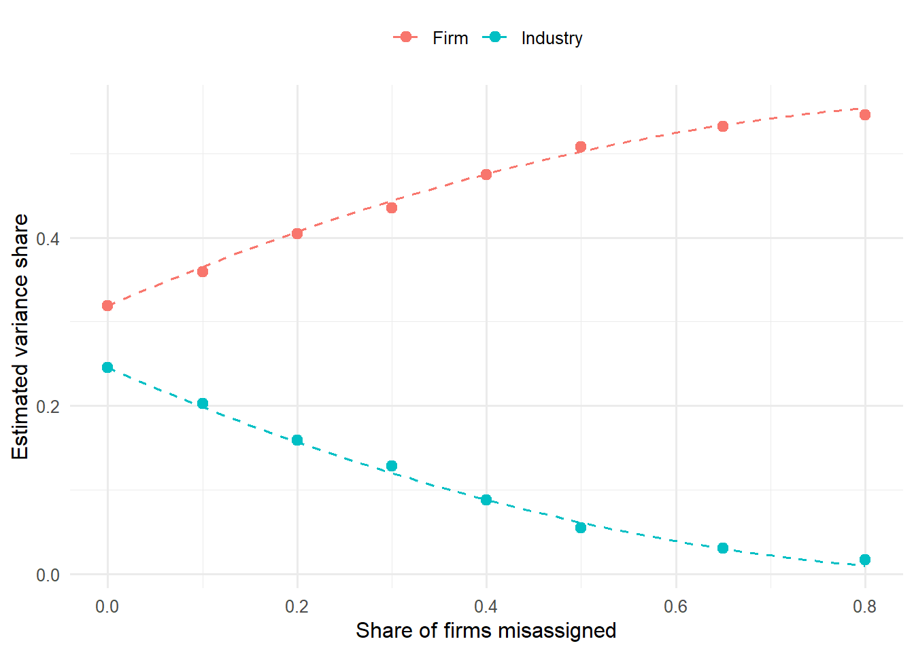

Almost every firm-level study in this book contains the word industry somewhere in its method section. Industry fixed effects absorb unobserved heterogeneity in the marketing–finance regressions of Chapter 26. Industry peers define the frontier against which marketing capability is estimated in Section 32.3. Industry-adjusted returns are the benchmark in event studies, and industry-year means are subtracted from advertising intensity, R&D intensity, and Tobin’s q before anyone asks whether marketing pays. Strategy uses industry for a different purpose but leans on it as heavily: since Schmalensee (1985), a long run of studies has asked what share of the variance in firm performance is attributable to the industry a firm is in, as opposed to the corporation that owns it or the firm itself. That question was introduced briefly as a controversy in Chapter 10. This chapter takes it up in full.
The organizing paper is Eshraghi and Vanneste (2026), published in the Strategic Management Journal. Its point is simple and, once stated, hard to un-see. Every variance decomposition, and every regression with an industry fixed effect, takes the assignment of firms to industries as given. The assignment comes from a classification scheme, usually the Standard Industrial Classification (SIC) codes that the U.S. government stopped revising in 1987, and the schemes in use disagree substantially about which firms belong together. Eshraghi and Vanneste (2026) show that the disagreement matters. Schemes that group more similar firms together produce larger industry effects and smaller firm effects, so the decades-old conclusion that industry matters little is partly an artifact of coarse and dated classification. Because most of the literature used SIC, the authors conclude that industry’s role in firm performance has likely been systematically underestimated.
The paper sits at the junction of three literatures that rarely cite one another. The first is the strategy literature on variance decomposition, which runs from Schmalensee (1985) and Rumelt (1991) through a meta-analysis by Vanneste (2017), the second author of the organizing paper. The second is the accounting and finance literature on industry classification, which since Clarke (1989) and Kahle and Walkling (1996) has compared SIC, NAICS, GICS, and, more recently, text-based and network-based groupings (Bhojraj, Lee, and Oler 2003; Hoberg and Phillips 2016; Kaustia and Rantala 2021). The third is marketing’s own literature on competitive market structure, which has always treated the boundary of a market as something to be estimated from customer behavior rather than read off a government code (Day, Shocker, and Srivastava 1979; Urban, Johnson, and Hauser 1984; DeSarbo, Grewal, and Wind 2006). The chapter covers all three, then replicates the core findings of Eshraghi and Vanneste (2026) on a Compustat panel with five families of classification, including a multiplex network scheme in the spirit of Shi and Nguyen (2024), which assigns firms to industries from several kinds of inter-firm relation at once.
The chapter is organized as follows. Section 11.1 reconstructs the variance decomposition debate study by study. Section 11.2 sets out the statistical model and shows, analytically and by simulation, exactly how misassignment moves variance from the industry component into the firm component. Section 11.3 reviews the classification schemes and the evidence on how well each one groups similar firms. Section 11.4 examines Eshraghi and Vanneste (2026) in detail. Section 11.5 replicates its three findings. Section 11.6 turns to heterogeneous-graph assignment and positions Shi and Nguyen (2024) against the organizing paper. Section 11.7 connects the whole problem to marketing’s treatment of market boundaries, and Section 11.8 draws out what a marketing researcher should do differently.
11.1 How Much Does Industry Matter? Forty Years of Variance Decomposition
11.1.1 The industrial-organization starting point
The structure–conduct–performance tradition in industrial organization held that profitability is mainly a property of markets. Concentration, entry barriers, and buyer and supplier power set the attainable margin, and firms inside a market earn roughly what the structure allows. The strategy field inherited this view through Porter (1980)’s five forces, which made the choice of industry the first strategic decision. If structure determines profit, the analytical unit is the industry and the firm is a price-taker of its environment.
Schmalensee (1985) put that view to a direct test. Using the Federal Trade Commission’s Line of Business data, which reported profitability for the separate business units of large U.S. manufacturers, he decomposed the variance in business-unit return on assets into industry effects, corporate (parent) effects, and market-share effects. As Rumelt (1991) later summarized it, industry factors were the strongest of the three, while corporate and market-share effects were extremely weak. Markets, in the title’s phrase, differ, and the differences show up in profits.
11.1.2 The firm-effects reply
Rumelt (1991) used the same FTC data but added years, which let him separate stable effects from fluctuating ones. A business unit observed over several years reveals whether its excess return is persistent, and persistence is what a theory of competitive advantage needs to explain. With stable and fluctuating components distinguished, the conclusion reversed. The abstract reports negligible corporate effects, small stable industry effects, and very large stable business-unit effects, from which Rumelt infers that “the most important sources of economic rents are business-specific”. The finding arrived as the resource-based view was being formulated, and it became that view’s most cited empirical foundation: if rents sit at the business-unit level, the theory should look for their source inside the firm (Wernerfelt 1984; H. Wang and Coff 2022).
Hansen and Wernerfelt (1989) had reached a compatible conclusion from a different angle, decomposing inter-firm profit variance into economic factors (industry profitability, market share, size) and organizational factors (climate measures from employee surveys) and finding that organizational factors explained about twice as much variance as economic ones. The firm-effects view had two independent supports by the early 1990s.
11.1.3 The reassessment
The next decade produced a sequence of replications, each changing one design choice. ROQUEBERT, PHILLIPS, and WESTFALL (1996) moved from the FTC data, which covered only manufacturing and only a few years in the 1970s, to Compustat business-segment data, and estimated a much larger corporate effect than Rumelt had. McGahan and Porter (1997) then used Compustat segments across the whole economy rather than manufacturing alone and found a materially larger industry component, especially outside manufacturing, together with a non-trivial corporate effect. McGahan and Porter (2002) reconciled the earlier studies by tracing their differences to method and data and concluded that “industry and corporate-parent effects are important and related to one another”.
Three methodological critiques sharpened the debate in the same period.
The first concerns what a variance share means. Brush and Bromiley (1997) simulated data in which corporate actions plainly affect business performance and showed that a small corporate variance component is compatible with a large substantive corporate influence. A variance share is a squared quantity, so it understates the importance of an effect relative to the standard-deviation scale on which managers think. The same point sits behind the two effect-size measures in Vanneste (2017), discussed below.
The second concerns estimation. Early studies used nested analysis of variance, in which the share attributed to a factor depends on the order in which factors enter, or variance components estimated by moments. Brush, Bromiley, and Hendrickx (1999) proposed an alternative estimator and found corporate influence on segment performance to be larger than industry influence. Hough (2006) and Misangyi et al. (2006) brought multilevel (hierarchical linear) models, which treat industries, corporations, and business units as cross-classified random effects. Hough found business-segment effects about twice corporate effects and roughly eight times industry effects, and argued that the multilevel model lets the analyst go beyond description by modelling what drives each level. Misangyi and colleagues confirmed that business-segment effects carry the most weight but showed that industry concentration and munificence, and the parent’s resource environment, have measurable effects within their levels. Sharapov et al. (2021) later showed that order, nesting, and the fixed-versus-random choice all move the estimates, and proposed the Shapley value as an order-free decomposition.
The third concerns what is being decomposed. Ruefli and Wiggins (2003) replaced variance decomposition with a non-parametric method based on the ranks of business units and found corporate factors over an order of magnitude better predictors than industry factors, which were not significant at all. McGahan and Porter (2005) replied that decomposition techniques are descriptive. They “offer no information about the drivers of business performance”, so no decomposition, parametric or not, can show that managers cause performance. They also argued that the estimates are distorted when the sample misrepresents the population.
11.1.4 Who drives the firm effect?
Hawawini, Subramanian, and Verdin (2003) moved the outcome from accounting returns to value-based measures (economic profit and market-to-book) and asked whether the firm effect is a general property of firms or a property of a few extreme ones. Their answer was the latter: a few dominant value creators and value destroyers in each industry generate much of the firm-effect variance, and for the remaining firms industry matters more than firm-specific factors. McNamara, Aime, and Vaaler (2005) challenged the outlier rule. Trimming the top and bottom of each industry mechanically restricts within-industry variance, so it almost deterministically shrinks the firm component and inflates the industry component. When firms are excluded by conventional outlier criteria instead, the estimates barely move.
The exchange matters for this chapter, because misassignment works through the same channel. A firm placed in the wrong industry is an outlier relative to its assigned peers. Whether such firms are trimmed, as Hawawini and colleagues did, or misplaced, as a coarse classification does, the effect lands on the split between industry and firm variance.
11.1.5 More levels, more contexts
Once the three-level model of industry, corporation, and business was settled, the literature added levels and conditioning contexts.
Strategic groups. Short et al. (2007) used hierarchical linear models on 1,165 firms in 12 industries and found firm effects strongest, with strategic-group effects rivalling, and for some measures exceeding, industry effects. The finding bears directly on assignment: an industry code that pools several strategic groups will understate the effect of the environment that firms actually share.
Countries. Makino, Isobe, and Chan (2004) decomposed the performance of the foreign affiliates of multinationals and found country effects as strong as industry effects. Goldszmidt, Brito, and Vasconcelos (2011) and Bamiatzi et al. (2016) extended the design to many countries. Bamiatzi and colleagues found that firm effects strengthen and industry effects weaken under the adversity of the 2008 crisis, particularly in emerging economies.
Business groups and ownership. Chang and Hong (2002) found substantial business-group effects among Korean chaebol affiliates. M. Fitza and Tihanyi (2017) showed that ownership form explains part of the performance differences among 30,525 EU firms.
Life cycle and time. Karniouchina et al. (2013) found that corporate-parent and industry effects increase as industries move from growth to maturity to decline. Guo (2017) separated stable from dynamic variance and found that the corporation-by-industry interaction is large and had been confounded with the main effects in earlier work. M. zhu Wang (2023), using sequential windows from 1978 to 2019, documented a persistent rise in corporate effects, which now exceed industry effects, and linked it to the refocusing of diversified U.S. firms since the 1980s.
Persistence. McGahan and Porter (1999) and Bou and Satorra (2007) moved from the level of effects to their dynamics: how quickly abnormal returns at the industry and firm level converge. Bou and Satorra found significant permanent differences at both levels, with more variation at the firm level and similar convergence rates.
Networks. Kumar, Liu, and Zaheer (2022) added the firm’s alliance network as a level, detecting network communities with the fast-unfolding (Louvain) algorithm (Blondel et al. 2008), and found that it explains 11% of the variance in ROA among 16,381 business segments. This is the closest antecedent in the strategy literature to assigning firms to groups from relational data, and Section 11.6 returns to it.
Corporate effects revisited. Andrews et al. (2023) showed that the corporate effect on subsidiary performance depends on the size of the portfolio and on the relatedness and institutional distance of subsidiaries. Avnimelech et al. (2025) introduced a Bayesian hierarchical decomposition for skewed, zero-inflated startup outcomes.
A parallel literature applies the same machinery to chief executives. Following Lieberson and O’Connor (1972), studies decompose performance into year, industry, firm, and CEO components (Mackey 2008; Quigley and Hambrick 2015; Hambrick and Quigley 2014). M. A. Fitza (2014) showed that random variation in performance inflates the measured CEO effect and proposed a correction against a chance benchmark. Quigley and Graffin (2017) disputed the correction, and M. A. Fitza (2017) replied that under realistic assumptions the CEO effect is “almost indistinguishable from the effect of chance”. The chance benchmark is reused in the replication below: if firms are assigned to industries at random, with the same number and sizes of groups, how large an “industry effect” appears?
11.1.6 The meta-analytic consensus and its limits
Vanneste (2017) resolved part of the disagreement by noticing that studies had reported three different effect-size measures: shares of sums of squares, shares of variance, and standard deviations. Simulation showed that the sum-of-squares measure is sensitive to sample dimensions such as the number of industries and the number of businesses per industry. Across 25 samples, the dimensions alone predicted the measure well. Meta-analysing the variance and standard-deviation measures instead (18 samples from 16 studies, \(N = 225{,}183\)), he estimated variance shares of 0.08 for industry, 0.14 for corporation, and 0.36 for business, and standard-deviation effect sizes of 0.28, 0.36, and 0.59. Business effects have roughly twice the explanatory power of corporate effects, and corporate effects somewhat more than industry effects. Esho and Verhoef (2021) and H. Wang and Coff (2022) review the same ground and reach the same ordering.
Every one of the studies in that meta-analysis assigns business units to industries with a government or vendor code, usually SIC at the three- or four-digit level. The methodological debate has interrogated the estimator, the outcome, the sample, the levels, the time window, and the effect-size metric. It has not interrogated the assignment. Mundt, Alfarano, and Milaković (2022) add a further reason for caution from the other end: conditional on long survival, corporate profitability is ergodic, so firm-specific differences fade over long horizons and the decomposition of a panel depends on how long its firms have survived.
11.2 The Model, and What Misassignment Does to It
11.2.1 Variance components
Let \(y_{ft}\) be the performance of firm \(f\) in year \(t\), and let \(j(f)\) denote the industry to which a classification scheme assigns the firm. The workhorse random-effects specification, in the form used by Misangyi et al. (2006) and the replication below, is
with mutually independent, mean-zero effects for year (\(\gamma_t\)), industry (\(\alpha_j\)), industry-year (\((\alpha\gamma)_{jt}\)), and firm (\(\phi_f\)), and an idiosyncratic error. Corporate-parent effects enter in studies of business segments, where a firm owns units in several industries; with single-entity firm-level data, as here, the firm and the corporation coincide. The quantity reported is the share of each component in the total variance,
and analogously for the other components. The industry-year term captures industry-wide shocks that are transient, which Rumelt (1991) separated from the stable industry effect. Because firms are nested within industries, the split between \(\sigma^2_\alpha\) and \(\sigma^2_\phi\) is identified by having several firms per industry. That split depends entirely on the assignment \(j(\cdot)\).
11.2.2 Misassignment moves variance, it does not destroy it
Suppose each firm has a true industry \(j^*(f)\) with effect \(\alpha_{j^*(f)}\), but the analyst observes a scheme \(j(f)\) that may differ. Assigned industry \(j\) then contains some firms from their true industry and some from elsewhere. The best the model can do is attribute to assigned industry \(j\) the average true effect of its members,
and the rest of each firm’s true industry effect, \(\alpha_{j^*(f)} - \tilde\alpha_{j(f)}\), has nowhere to go but the firm effect, because it is constant over time for the firm. By the law of total variance,
\[
\sigma^2_\alpha = \underbrace{\operatorname{Var}\big(\tilde\alpha_{j(f)}\big)}_{\text{estimated industry variance}}
\;+\; \underbrace{\mathbb{E}\Big[\operatorname{Var}\big(\alpha_{j^*(f)} \mid j(f)\big)\Big]}_{\text{absorbed by the firm effect}}.
\tag{11.3}\]
The estimated industry variance is therefore \(\eta^2\sigma^2_\alpha\), where \(\eta^2\) is the correlation ratio of the true industry effect on the assigned partition: the share of the variation in firms’ true environments that the scheme’s groups capture. The remainder, \((1-\eta^2)\sigma^2_\alpha\), is added to the firm component. Total variance and the residual are unchanged, so misassignment does not add noise. It relabels industry variance as firm variance.
Two special cases make the result concrete. If a fraction \(p\) of firms is reassigned to a uniformly random other industry and there are many industries, each assigned group’s average true effect shrinks toward zero by the factor \(1-p\), so
A misassignment rate of 25% removes 44% of the industry share. If, instead, firms are misassigned to neighbouring industries whose true effects are similar, \(\eta^2\) stays close to one and little is lost. What matters is not whether a scheme’s labels match some reference, but whether the firms it groups together share the same environment. This is the formal content of the finding in Eshraghi and Vanneste (2026) that “schemes that group more similar firms together exhibit stronger industry effects”.
The chunk below checks Equation 11.4 by simulation. It draws 60 industries of 25 firms observed for 10 years, with a true industry share of 20%, a firm share of 35%, and a residual of 45%. It then reassigns a growing fraction of firms and refits the random-effects model.
Code
library(lme4)library(dplyr)library(tidyr)library(ggplot2)set.seed(42)K<-60; n_per<-25; n_years<-10firms<-tibble(firm =1:(K*n_per), true_ind =rep(1:K, each =n_per))ind_eff<-rnorm(K, 0, sqrt(0.20))# true industry share 0.20firm_eff<-rnorm(nrow(firms), 0, sqrt(0.35))# true firm share 0.35panel<-crossing(firms, year =1:n_years)|>mutate(y =ind_eff[true_ind]+firm_eff[firm]+rnorm(n(), 0, sqrt(0.45)))reassign<-function(p){move<-runif(nrow(firms))<plab<-firms$true_indlab[move]<-(lab[move]+sample(1:(K-1), sum(move), TRUE)-1)%%K+1lab}shares<-function(d){v<-as.data.frame(VarCorr(lmer(y~1+(1|ind)+(1|firm), data =d, control =lmerControl(calc.derivs =FALSE))))setNames(v$vcov/sum(v$vcov), v$grp)}p_grid<-c(0, 0.1, 0.2, 0.3, 0.4, 0.5, 0.65, 0.8)sim<-bind_rows(lapply(p_grid, function(p){s<-shares(mutate(panel, ind =reassign(p)[firm]))tibble(p =p, Industry =s[["ind"]], Firm =s[["firm"]])}))s0<-sim|>filter(p==0)theory<-tibble(p =seq(0, 0.8, 0.01))|>mutate(Industry =(1-p)^2*s0$Industry, Firm =s0$Firm+(1-(1-p)^2)*s0$Industry)ggplot(pivot_longer(sim, -p), aes(p, value, colour =name))+geom_line(data =pivot_longer(theory, -p), linetype ="dashed")+geom_point(size =2.5)+labs(x ="Share of firms misassigned", y ="Estimated variance share", colour =NULL)+theme_minimal(base_size =12)+theme(legend.position ="top")

Figure 11.1: Random misassignment relabels industry variance as firm variance. Points are random-effects estimates on simulated panels; dashed lines are the approximation in Equation 11.4. The residual share (not shown) stays at its true value of 0.45 throughout.
The estimates follow the approximation closely. The practical lesson is that the industry share reported by a variance decomposition is a joint property of the economy and of the classification scheme. It is a lower bound on how much the environment that firms actually share matters, and the bound is tight only when the scheme captures that environment well. The same logic applies to every regression in this book that uses industry fixed effects as a control. A fixed effect on a poor grouping leaves part of the industry component in the error term, where it can correlate with the marketing variable of interest.
11.2.3 Two refinements
Two features of real classification complicate the clean model.
First, many firms belong to more than one market. A diversified firm reports segments in several SIC codes, and a platform competes in several product markets at once. Assigning it to a single industry forces a choice. Multiple-membership models (Browne, Goldstein, and Rasbash 2001) let an observation belong to several units of a classification with weights, so a firm’s industry effect becomes a weighted average of the effects of the markets it operates in. This is the natural statistical home for the firm-specific, overlapping peer sets produced by text-based and network-based methods, which Section 11.3 and Section 11.6 discuss.
Second, assignment may be endogenous. Firms choose which markets to enter and how to describe themselves, and the text from which a scheme is built (the 10-K business description) is written by the firm. Hoberg and Phillips (2016) treat product differentiation as an endogenous choice that their text-based industries make visible. If high-performing firms systematically differentiate away from their SIC peers, misassignment under SIC is correlated with the firm effect, and the attenuation in Equation 11.3 is not the only bias.
11.3 Industry Classification Schemes
An industry classification is a partition of firms, or a set of firm-specific peer lists, built by some rule from some data. Schemes differ in three ways that matter for everything above: the basis of similarity (production process, product, demand, investor perception, relationships), the producer of the assignment (a statistical agency, a data vendor, the researcher’s algorithm), and the dynamics (fixed at a point in time, revised occasionally, or re-estimated every year).
11.3.1 Government codes: SIC and NAICS
The Standard Industrial Classification was created by the U.S. government in the late 1930s and last revised in 1987. It assigns each establishment a four-digit code organized as a hierarchy (division, two-digit major group, three-digit industry group, four-digit industry), and a firm’s code is that of its primary activity. Its grouping principle mixes products and production processes, and its industries reflect the manufacturing economy of the mid-twentieth century: fine distinctions among metal products, coarse ones among services and software.
The North American Industry Classification System replaced SIC for U.S. statistical agencies from 1997, jointly with Canada and Mexico. Krishnan and Press (2003) describe its principle as grouping by production process, a change that created 358 new industries and extensively rearranged the SIC categories. Using within-industry variance in financial ratios as a measure of homogeneity, following Guenther and Rosman (1994), they find that NAICS improves on SIC for manufacturing, transportation, and services, and that inferences in a reproduced accounting study are similar under either scheme, with smaller intra-industry dispersion under NAICS.
Two practical problems compound the conceptual ones. Different databases assign different codes to the same firm. Guenther and Rosman (1994) document differences between the SIC codes on Compustat and on CRSP and show that a published result can hold under one and fail under the other, and Kahle and Walkling (1996) show how the choice between databases, and between a firm’s current header code and its historical codes, affects financial research. Compustat’s header code is the firm’s most recent classification, backfilled to every year, so a firm that moved from hardware to services carries its services code into the years when it made hardware. The replication in Section 11.5 uses header codes, as most studies do, and inherits this limitation.
Clarke (1989) asked directly whether SIC codes delineate economic markets, by testing whether firms that share a code behave as though they share a market. Nightingale (1978) had earlier distinguished an industry, a grouping of producers, from a market, a grouping by buyers’ substitution. The distinction is the crux of this chapter. A government code groups producers, but the forces that a variance decomposition attributes to industry (rivalry, entry, buyer power) operate on markets.
11.3.2 Vendor codes: GICS
The Global Industry Classification Standard was developed in 1999 by Standard & Poor’s and MSCI for investment practice. It has four levels (sectors, industry groups, industries, and sub-industries; the replication sample below contains 25 industry groups, 70 industries, and 159 sub-industries), assigns each company by its principal business activity, and is reviewed annually. Bhojraj, Lee, and Oler (2003) compared SIC, NAICS, GICS, and the industries of Fama and French (1997), an academic regrouping of SIC codes. GICS was significantly better at explaining stock return comovement and cross-sectional variation in valuation multiples, growth rates, R&D intensity, and key financial ratios. The advantage was stable from year to year and largest among large firms, and the other three schemes differed little from each other. Chan, Lakonishok, and Swaminathan (2007) and Chou, Ho, and Ko (2012) examine how well classifications capture return comovement and asset-pricing patterns. Hrazdil, Trottier, and Zhang (2013) and Hrazdil, Trottier, and Zhang (2014) extend the scheme comparisons to larger samples and to intra- and inter-industry evaluations, and Phillips and Ormsby (2016) review the schemes available in business databases and how codes are assigned in each.
11.3.3 Text-based industries
Hoberg and Phillips (2010) and Hoberg and Phillips (2016) built industries from the product descriptions in firms’ 10-K filings. Each firm-year’s business description is represented as a vector of product words, and the similarity of two firms is the cosine of their vectors. The Text-based Network Industries (TNIC) define each firm’s competitors as the firms whose similarity exceeds a threshold calibrated to match the coarseness of three-digit SIC. Three properties distinguish TNIC from any code.
It is firm-specific. Each firm has its own peer set, and the relation need not be transitive: A may be close to B and B to C without A being close to C. A code forces transitivity, because everyone with the same code is everyone else’s peer.
It is time-varying. Similarities are recomputed every year, so a firm that repositions shows up near new rivals at once.
It measures product similarity, not production process.
Hoberg and Phillips also cluster the similarity data into fixed industries, which restore a partition for applications that need one. The text-based measures have since been used to construct measures of competitive threat, such as “product market fluidity”, the change in rivals’ products relative to one’s own (HOBERG, PHILLIPS, and PRABHALA 2014), and they are the most common alternative to SIC in finance. LOUGHRAN and MCDONALD (2016) survey textual analysis in accounting and finance and describe its pitfalls, and Gentzkow, Kelly, and Taddy (2019) and Chapter 47 cover the methods.
11.3.4 Peer-based groupings
A different family infers similarity from what market participants do.
Investor co-search. C. M. C. Lee, Ma, and Wang (2015) define search-based peers as firms whose filings investors look up together on EDGAR, which aggregates the revealed judgments of many investors.
Analyst co-coverage. Kaustia and Rantala (2021) group firms by the analysts who cover them and find that the analyst-based method “produces substantially more homogeneous groups of firms compared to common industry classifications”. They argue that this demonstrates the advantages of a self-organizing classification over a hierarchical one. De Franco, Hope, and Larocque (2015) study the peer companies that analysts name in their reports.
Economic links. COHEN and FRAZZINI (2008) use firms’ disclosed principal customers to link supplier and customer, and show that news about one is slowly incorporated into the other’s price. Supply-chain links connect firms that are complementary rather than similar.
Relatedness. Fan and Lang (2000) measure the relatedness of industries from input-output tables, distinguishing vertical relatedness from complementarity, and Hidalgo et al. (2007) build a “product space” from the co-occurrence of exports across countries. Both measure proximity by what goes together rather than by what looks alike.
Systems. Dalziel (2007) proposes a systems-based classification that groups firms by how they self-organize into industries and sectors.
11.3.5 Categories as social constructions
Organization theory adds a point the classification comparisons miss. Industry categories are not only measurement devices but also institutions that shape behavior. Porac et al. (1995) show that Scottish knitwear producers defined their rivals through a shared cognitive model of organizational forms, so the market’s boundaries were socially constructed around that model. Zuckerman (1999) showed that firms whose identity does not match the industry categories in which securities analysts specialize receive less coverage and trade at an “illegitimacy discount”. Hsu (2006) found that films spanning more genres attract larger audiences but appeal less to each audience member. Cattani, Porac, and Thomas (2017) integrate this work with strategic management and argue that boundary questions are fundamental to the competitive process, and Vergne and Wry (2014) review the categorization literature. McKelvey (1975) set out guidelines for empirical taxonomies of organizations that anticipate much of the modern debate.
The categorical view implies that a classification can have real effects as well as measurement error. If analysts, investors, and regulators use SIC or GICS to compare firms, then the assigned industry is part of a firm’s environment whether or not it matches the firm’s products. A scheme that is a worse measure of product similarity may still be a better measure of the comparisons that discipline the firm. The choice of scheme should therefore follow from the theory of what an industry effect is supposed to capture.
11.4 The Organizing Paper: Eshraghi and Vanneste (2026)
11.4.1 The question
Eshraghi and Vanneste (2026) begin from the observation that the variance decomposition literature has paid “little attention” to “the industry to which a firm is assigned”. Their question is how industry assignment affects the findings about industry’s impact. The question has three parts, and the paper answers each.
Do schemes agree? If SIC, NAICS, GICS, and alternative groupings put the same firms together, the choice of scheme is innocuous. If they do not, every estimate is conditional on the scheme.
Which firms are grouped consistently? Disagreement need not be uniform. Some firms may sit unambiguously in one market while others straddle several.
Does assignment change the industry effect? This is the substantive question, and Equation 11.3 predicts the direction: a scheme whose groups are more homogeneous in the firms’ true environments should show a larger industry share and a smaller firm share.
11.4.2 Design
The authors analyze existing industry classification schemes and introduce one of their own. The new scheme is built with machine learning: an embedding model processes text from firms’ annual reports, mapping each firm to a vector so that firms describing similar businesses lie close together, and firms are then grouped by proximity in that space. This is the same idea as the text-based industries of Hoberg and Phillips (2016), but with a learned embedding (Reimers and Gurevych 2019) in place of a bag of product words, which lets synonyms and paraphrases count as similar.
Each scheme is then put through the same three tests: agreement with the others, the consistency with which particular firms are grouped together, and a variance decomposition of firm performance into industry, firm, and time components under that scheme’s assignment. Because the schemes differ in how similar the firms they group together are, the design turns the classification itself into the treatment, and the industry share into the outcome.
11.4.3 Findings
The published abstract reports three findings.
Industry assignment “differs substantially across schemes”. Classifications that are often used interchangeably put different firms together.
“Certain firms are more consistently grouped together.” Agreement is concentrated among some firms and scarce for others.
“Schemes that group more similar firms together exhibit stronger industry effects.” The managerial summary states the corollary: grouping similar firms in the same industry “increases reported industry importance and decreases firm importance”.
The working-paper version adds a within-scheme counterpart to the third finding: industries whose firms are more similar also exhibit stronger industry effects (Eshraghi and Vanneste 2023). The two results are the cross-scheme and cross-industry faces of the same mechanism, Equation 11.3: the industry component captures the shared environment only to the extent that the group’s members share it.
The conclusion follows from combining these results with the history in Section 11.1. The literature has relied heavily on SIC, a scheme that has been criticized for decades and that groups less similar firms together than the alternatives. Industry’s role in firm performance has therefore “likely been systematically underestimated”, and the business-unit dominance that made Rumelt (1991) the empirical foundation of the resource-based view is partly an artifact of measurement.
11.4.4 Reading the paper critically
The argument is strong, and it is worth being precise about what it does and does not show.
Larger industry shares are not automatically better.Equation 11.3 shows that a more homogeneous grouping raises the industry share, but any grouping that pools firms with similar outcomes also raises it. A scheme built from performance data would mechanically win. A scheme built from text is not built from performance, which is why the design is credible, but text is not independent of performance either: a firm’s description of its business reflects its strategy, and strategy drives performance. The cleanest version of the test uses text from before the performance window.
Granularity must be matched. A finer partition mechanically raises the industry share, because each group has fewer firms and the group means absorb more firm-level variation. This is the sample-dimension sensitivity that Vanneste (2017) documented for sums of squares, and it applies to variance shares in finite samples too. Comparisons should hold the number of groups fixed and benchmark against random assignment, as the replication below does.
Similarity in what? Text similarity measures product overlap. Whether that is the environment an industry effect should capture depends on the theory. Five-forces logic puts rivals in the industry and suppliers and buyers outside it. The categorical view of Zuckerman (1999) suggests that the codes analysts use are part of the environment even when they mismatch products. Section 11.6 takes up the alternatives.
Single-entity firms. Like the replication here, the paper decomposes firm-level performance. The corporate-parent level, central to the debate in Section 11.1.3, requires segment data, in which each segment must also be assigned to an industry, usually by the firm’s own segment reporting.
None of this weakens the main point. Any of these caveats could change the size of the underestimate, but none reverses the direction implied by Equation 11.3, and the direction is the paper’s contribution.
11.5 Replication: Five Ways to Draw Industry Boundaries
This section replicates the three findings of Eshraghi and Vanneste (2026) on a different sample and with different alternative schemes, and adds a fourth scheme family built from inter-firm relations. The aim is a conceptual replication: the same question and tests, with independent data and an independently built machine-learning scheme.
11.5.1 Data and schemes
The panel is the Compustat North America fundamentals file built in Section 32.3.5, restricted to U.S.-dollar reporters with sales of at least $10 million in 2000–2021 (the years covered by both Compustat and the text data), excluding financial firms (SIC 6000–6999) and unclassified firms, and requiring at least three firm-years. Two performance measures are decomposed. The first is operating return on sales, (sales − cost of goods sold − SG&A) / sales, an accounting measure close to the return-on-assets measures of the variance decomposition literature; total assets are not part of this panel, so ROA itself cannot be formed. The second is the Total q of Peters and Taylor (2017), a market-value measure in the spirit of Hawawini, Subramanian, and Verdin (2003)’s value-based outcomes. Both are winsorized at the 1st and 99th percentiles. The common sample is 6,284 firms and 70,034 firm-years for return on sales (65,052 for Total q), every one of which has an SIC, NAICS, and GICS code and appears in the text-similarity network.
Five families of scheme are compared:
SIC at two, three, and four digits (Compustat header codes);
NAICS at three, four, and six digits;
GICS at the industry-group, industry, and sub-industry levels (four, six, and eight digits);
a text scheme: the TNIC pairwise product similarities of Hoberg and Phillips (2016), averaged over the years in which both firms are covered, embedded spectrally, and clustered by k-means into exactly as many groups as SIC has at two, three, and four digits (63, 239, and 382 groups);
a multiplex scheme in the spirit of Shi and Nguyen (2024): the same text layer plus five relational layers (customer–supplier links from segment disclosures, analyst co-coverage, board interlocks, patent collaboration, and parent–subsidiary links), each scaled to [0, 1] at its 99th percentile and summed with equal weight, then embedded and clustered in the same way.
The text and multiplex schemes are built without any performance data, and the clustering step fixes the number of groups so that each data-driven scheme can be compared with SIC at the same granularity. Section 11.6.3 explains why modularity-based community detection was not used. For each scheme we compute agreement with SIC3 (the adjusted Rand index, which is 0 for chance-level agreement and 1 for identical partitions; Hubert and Arabie (1985)), two similarity diagnostics, and the variance decomposition of Equation 11.1, fitted by restricted maximum likelihood with crossed random effects for year, industry, industry-year, and firm. The full script is at the end of the section.
11.5.2 Finding 1: the schemes disagree
Table 11.1: Agreement between schemes at the three-digit-SIC granularity (adjusted Rand index). 1 = identical partitions, 0 = chance-level agreement.
SIC3
NAICS4
GICS8
Text (239)
Multiplex (239)
SIC3
1.00
0.58
0.37
0.13
0.09
NAICS4
0.58
1.00
0.39
0.18
0.13
GICS8
0.37
0.39
1.00
0.22
0.18
Text (239)
0.13
0.18
0.22
1.00
0.30
Multiplex (239)
0.09
0.13
0.18
0.30
1.00
Table 11.1 shows that assignment differs substantially across schemes. The two government codes agree most (ARI 0.59 between SIC3 and NAICS4), which is unsurprising since NAICS was built partly by rearranging SIC. GICS agrees with each of them at under 0.4. The text scheme agrees with SIC3 at 0.13, and the multiplex scheme at 0.09. Even the two data-driven schemes, which share the text layer, agree at only 0.30.
The pair-level view makes the second finding of Eshraghi and Vanneste (2026) visible. Consider every pair of firms that at least one of the five schemes in Table 11.1 places in the same industry.
Table 11.2: How many of the five three-digit-granularity schemes put a pair of firms in the same industry, among pairs grouped together by at least one scheme.
Schemes agreeing
Firm pairs
Share
1
605,197
0.535
2
330,508
0.292
3
142,032
0.125
4
40,209
0.036
5
13,836
0.012
Of 1.13 million such pairs, 53% are grouped together by only one scheme, and 1.2% (13,836 pairs) by all five (Table 11.2). Some firms are consistently placed together, and they form a small core of unambiguous industries. Most co-assignments are specific to one scheme.
11.5.3 Finding 2: data-driven schemes group more similar firms
Two diagnostics measure how similar the firms in each scheme’s groups are. The first is the mean pooled TNIC similarity over all within-group pairs, counting unlinked pairs as zero. It favours the text scheme by construction, because that scheme was built from the same similarities. The second avoids that circularity. Following Bhojraj, Lee, and Oler (2003), it is the \(R^2\) from regressing each firm’s annual log sales growth on the leave-one-out mean growth of its industry peers in the same year. It uses no text, and it asks whether the firms grouped together move together.
Both diagnostics rank the schemes the same way at the three-digit granularity (columns “Text sim.” and “Comove R²” of Table 11.3 below). Mean within-industry text similarity is 0.0097 under SIC3, about 0.017 under NAICS4 and GICS8, and 0.024 to 0.026 under the multiplex and text schemes. Comovement \(R^2\) is 0.111 to 0.114 under SIC3 and NAICS4, 0.129 under GICS8, and 0.136 to 0.137 under the two data-driven schemes. The data-driven schemes group firms whose sales move together more closely, even though they were built from text and relations, not from sales. The comovement ranking is the same at the two- and four-digit granularities.
11.5.4 Finding 3: more similar groupings yield larger industry effects
Table 11.3: Fifteen schemes, grouped by granularity. Columns: number of industries, median industry size, agreement with SIC3, mean within-industry text similarity, sales-growth comovement R², and the industry and firm variance shares of return on sales (ROS) and Total q.
Scheme
Groups
Median size
ARI vs SIC3
Text sim.
Comove R²
Industry (ROS)
Firm (ROS)
Industry (q)
Firm (q)
SIC2
63
34.0
0.72
0.0060
0.107
0.061
0.632
0.033
0.562
NAICS3
88
29.5
0.44
0.0086
0.108
0.057
0.633
0.069
0.531
GICS6
70
60.0
0.39
0.0120
0.124
0.152
0.522
0.075
0.525
TNIC_K1
63
66.0
0.28
0.0133
0.138
0.115
0.550
0.101
0.488
MPX_K1
63
88.0
0.14
0.0102
0.140
0.223
0.454
0.212
0.413
SIC3
239
9.0
1.00
0.0097
0.114
0.053
0.619
0.030
0.556
NAICS4
273
9.0
0.58
0.0173
0.111
0.053
0.620
0.071
0.521
GICS8
159
21.0
0.37
0.0171
0.129
0.102
0.556
0.082
0.519
TNIC_K2
239
18.0
0.13
0.0263
0.136
0.191
0.479
0.192
0.413
MPX_K2
239
22.0
0.09
0.0243
0.137
0.278
0.404
0.210
0.395
SIC4
382
7.0
0.56
0.0153
0.105
0.082
0.570
0.045
0.538
NAICS6
804
3.0
0.40
0.0201
0.098
0.071
0.575
0.063
0.520
TNIC_K3
382
12.0
0.09
0.0292
0.126
0.228
0.452
0.178
0.419
MPX_K3
382
14.0
0.06
0.0276
0.129
0.313
0.384
0.228
0.382
GICS4
25
158.0
0.45
0.0071
0.116
0.142
0.556
0.073
0.531
Table 11.3 holds the main result. Three patterns stand out.
Under SIC, the industry share of return on sales is 0.05 to 0.08 at every level of the hierarchy. That range brackets the meta-analytic industry variance share of 0.08 in Vanneste (2017), so the sample behaves like the literature’s samples when it is classified the way they were.
At matched granularity, the data-driven schemes raise the industry share by a factor of two to seven. At the three-digit level (239 groups), the industry share of return on sales is 0.053 under SIC3, 0.191 under the text scheme, and 0.278 under the multiplex scheme, and the firm share falls from 0.62 to 0.48 and 0.40. For Total q, the industry share rises from 0.030 to 0.192 and 0.210. The pattern holds at the two- and four-digit granularities as well.
The ranking broadly follows the non-text similarity diagnostic, as Figure 11.2 shows. Within each granularity, schemes with higher sales-growth comovement have larger industry shares. The exceptions are near-ties among the codes and one larger reversal. NAICS has slightly lower comovement than SIC at the three- and four-digit levels but a higher Total q share. At the coarsest level, GICS industries (0.152) outrank the 63 text clusters (0.115) on return on sales despite lower comovement. GICS generally sits between the government codes and the data-driven schemes, which matches Bhojraj, Lee, and Oler (2003)’s finding that GICS groups firms better than SIC or NAICS do.
Figure 11.2: Industry variance share against sales-growth comovement, by scheme. Comovement is the R² of firm sales growth on the leave-one-out industry-year mean, a similarity criterion that uses no text. Labels mark the three-digit-granularity schemes; the dotted line at zero is the industry share under random assignment (permutation benchmark).
11.5.5 Robustness
Four checks address the obvious objections.
Chance. Permuting each SIC scheme’s labels across firms, which preserves the number and sizes of industries but destroys their meaning, yields an industry share of at most 0.006 for return on sales and 0.002 for Total q across three permutations at each SIC level, in the spirit of M. A. Fitza (2014). With restricted maximum likelihood, the chance floor is essentially zero, so the industry shares in Table 11.3 are not artifacts of group counts.
Within-scheme variation. The working-paper version of Eshraghi and Vanneste (2023) reports that industries whose firms are more similar show stronger industry effects. Splitting the 208 SIC3 industries with at least three firms at the median within-industry text similarity, and decomposing each half separately, gives an industry share of return on sales of 0.056 in the more-similar half and 0.033 in the less-similar half (Total q: 0.046 against 0.022). The within-scheme result replicates.
Clustering choices. k-means has random starts, so the data-driven partitions are not unique. Re-clustering the same embeddings with two other seeds gives partitions that agree with the originals at an ARI of about 0.6 to 0.7, and industry shares of return on sales of 0.154 to 0.241 for the text scheme and 0.275 to 0.305 for the multiplex scheme (Total q: 0.146 to 0.159 and 0.226 to 0.233). Capping the text weights at their 99th percentile, as the multiplex graph does, leaves the text scheme’s share unchanged at 0.191. The size of the gain depends on the clustering, but every variant lies far above the SIC3 share of 0.053 (0.030 for Total q).
Which relations? Re-clustering at the 239-group granularity with the text layer plus the four sparse relational layers (no analyst co-coverage) gives an industry share of 0.293 for return on sales and 0.186 for Total q, close to the full multiplex scheme and above every text-only variant on return on sales. The gain from the multiplex graph does not depend on analyst co-coverage; customer, board, patent, and ownership links add information that product text lacks. With analyst co-coverage alone, the shares are 0.301 and 0.217, but this graph is a warning rather than a result: 1,233 of the 6,284 firms have no analyst co-coverage at all, and the clustering lumps them into one group, which is in effect a “small firms without coverage” industry. A grouping on an attribute that correlates with performance raises the industry share mechanically, which is exactly the caveat raised in
Section 11.4.4.
11.5.6 What the replication does and does not show
The replication confirms the direction and the mechanism of Eshraghi and Vanneste (2026) on public text data and on a multiplex network. It is not a reproduction of their numbers. Their sample, years, performance measure, and embedding model differ from ours, and the published article should be consulted for their estimates. Three limitations are specific to this design. The government and vendor codes are header codes, so firms that changed industry carry their current code into earlier years, which biases those schemes downward (Kahle and Walkling 1996). The data-driven schemes are pooled over 2000–2021, so a firm’s group uses information from years after a given performance observation. Finally, the outcome is return on sales rather than return on assets, because the panel lacks total assets.
The code below reproduces every number in this section from the inputs listed at its top. It is not run when the book is built, because the inputs are proprietary (Compustat, I/B/E/S, and director and patent data) or large (TNIC is about 640 MB); the results were computed offline and are hard-coded above.
Code
# Industry assignment and industry effects: a replication in the spirit of# Eshraghi & Vanneste (2026, SMJ), "Revisiting industry effects: The assignment# of firms to industries".## Inputs (not redistributed; proprietary or large):# - Compustat North America fundamentals with header SIC / NAICS / GICS# (the panel built in 23-metrics.qmd, saved as data/capability/capability.rds)# - Peters-Taylor Total Q (data/totalq.rds)# - Hoberg-Phillips TNIC-3 pairwise similarity (tnic3_data.txt, public at# hobergphillips.tuck.dartmouth.edu)# - Optional relation layers for a multiplex network (customer-supplier,# analyst co-coverage, board interlocks, patent collaboration, subsidiaries)## Outputs: small aggregate tables in OUT (scheme summaries, ARI matrix,# pair-consistency counts, variance shares, permutation benchmarks).suppressMessages({library(data.table); library(lme4); library(mclust)})set.seed(20261007)CAP<-"data/capability/capability.rds"TQ<-"data/totalq.rds"NET<-"networks"# TNIC-3 file and relation layersOUT<-"out"dir.create(OUT, showWarnings =FALSE, recursive =TRUE)YEARS<-2000:2021# overlap of Compustat panel and TNIC-3wins<-function(x, p=0.01){q<-quantile(x, c(p, 1-p), na.rm =TRUE); pmin(pmax(x, q[1]), q[2])}# ---- 1. Firm-year panel -----------------------------------------------------cap<-as.data.table(readRDS(CAP))cap<-cap[curcd=="USD"&year%in%YEARS&!is.na(sale)&sale>=10]cap[, sicn:=as.integer(sic)]cap<-cap[!is.na(sicn)&!(sicn>=6000&sicn<7000)&sicn<9000]cap[, ros:=(sale-fifelse(is.na(cogs), 0, cogs)-fifelse(is.na(xsga), 0, xsga))/sale]setorder(cap, gvkey, year)cap[, growth:=log(sale/shift(sale)) , by =gvkey]cap[shift(year)!=year-1, growth:=NA, by =gvkey]tq<-as.data.table(readRDS(TQ))[, .(gvkey, year =as.integer(fyear), q =q_tot)]tq<-unique(tq, by =c("gvkey", "year"))cap<-merge(cap, tq, by =c("gvkey", "year"), all.x =TRUE)cap[, `:=`(ros =wins(ros), q =wins(q), growth =wins(growth))]# Header classifications (time-invariant in the Compustat `names` file)pad<-function(x, k)fifelse(!is.na(x)&nchar(x)>=k, substr(x, 1, k), NA_character_)firm<-unique(cap[, .(gvkey, sic =sprintf("%04d", sicn), naics, gind, gsubind)], by ="gvkey")firm[, `:=`(SIC2 =substr(sic, 1, 2), SIC3 =substr(sic, 1, 3), SIC4 =sic, NAICS3 =pad(naics, 3), NAICS4 =pad(naics, 4), NAICS6 =pad(naics, 6), GICS4 =pad(gsubind, 4), GICS6 =pad(gind, 6), GICS8 =pad(gsubind, 8))]# ---- 2. Text-based network (TNIC-3), pooled over years ----------------------tn<-fread(file.path(NET, "tnic3_data.txt"))[year%in%YEARS]tn[, `:=`(g1 =sprintf("%06d", gvkey1), g2 =sprintf("%06d", gvkey2))]tn<-tn[g1<g2&g1%in%firm$gvkey&g2%in%firm$gvkey]ny<-rbind(tn[, .(g =g1, year)], tn[, .(g =g2, year)])[, .(ny =uniqueN(year)), by =g]tnp<-tn[, .(s =sum(score)), by =.(g1, g2)]tnp<-merge(merge(tnp, ny[, .(g1 =g, ny1 =ny)], by ="g1"), ny[, .(g2 =g, ny2 =ny)], by ="g2")tnp[, w:=s/pmin(ny1, ny2)]# average annual similarity while both are coveredrm(tn); gc()# Common sample: firms with every header code and TNIC coveragefirm<-firm[!is.na(NAICS6)&!is.na(GICS8)&gvkey%in%ny$g]cap<-cap[gvkey%in%firm$gvkey]cap[, nobs:=.N, by =gvkey]cap<-cap[nobs>=3]firm<-firm[gvkey%in%cap$gvkey]tnp<-tnp[g1%in%firm$gvkey&g2%in%firm$gvkey]# A firm with no text link to any other sample firm cannot be placed by a# similarity-based scheme; such isolates would each become a one-firm# "industry" and inflate the scheme's group count. Drop them from every scheme.linked<-unique(c(tnp$g1, tnp$g2))firm<-firm[gvkey%in%linked]cap<-cap[gvkey%in%firm$gvkey]cat("firms:", nrow(firm), " firm-years:", nrow(cap), " TNIC pairs:", nrow(tnp), "\n")# ---- 3. Clustering a similarity graph to a target number of industries -------# Modularity-based community detection (Louvain/Leiden) reaches a high group# count mostly by stranding weakly linked firms as one-firm "industries", which# makes the partition incomparable with SIC. Instead embed then cluster, as# Eshraghi and Vanneste do with text embeddings: a spectral embedding of the# normalized similarity graph (Ng-Jordan-Weiss), then k-means with exactly the# target number of groups, so every firm is placed.spectral_k<-function(edges, Ks, verts, d=150){idx<-setNames(seq_along(verts), verts)W<-Matrix::sparseMatrix(i =idx[edges$g1], j =idx[edges$g2], x =edges$w, dims =rep(length(verts), 2), symmetric =TRUE)deg<-Matrix::rowSums(W); deg[deg==0]<-1e-12Dm<-Matrix::Diagonal(x =1/sqrt(deg))e<-RSpectra::eigs_sym(Dm%*%W%*%Dm, k =d, which ="LA")U<-e$vectors/sqrt(rowSums(e$vectors^2))lapply(Ks, function(K){set.seed(1)km<-kmeans(U, centers =K, nstart =5, iter.max =200, algorithm ="MacQueen")setNames(as.character(km$cluster), verts)})}targets<-c(K1 =uniqueN(firm$SIC2), K2 =uniqueN(firm$SIC3), K3 =uniqueN(firm$SIC4))ms<-spectral_k(tnp, targets, firm$gvkey)for(kinnames(targets))firm[, (paste0("TNIC_", k)):=ms[[k]][gvkey]]# Multiplex graph: text similarity plus five relational layers, each scaled to# [0, 1] by its 99th percentile, summed with equal weight.pool_layer<-function(file, a, b, val){d<-fread(file.path(NET, file), colClasses =list(character =c(a, b)))d<-d[get("year")%in%YEARS]d[, `:=`(x =pmin(get(a), get(b)), y =pmax(get(a), get(b)))]d<-d[x!=y&x%in%firm$gvkey&y%in%firm$gvkey, .(v =sum(get(val))), by =.(g1 =x, g2 =y)]d[, v:=pmin(v/quantile(v, 0.99), 1)][]}layers<-list( text =tnp[, .(g1, g2, v =pmin(w/quantile(w, 0.99), 1))], customer =pool_layer("customer_segments_1990_2022_cleaned.csv", "gvkey1", "gvkey2", "market_share"), analyst =pool_layer("ibes_analyst_sum.csv", "gvkey1", "gvkey2", "num_analysts"), board =pool_layer("board_sum.csv", "gvkey1", "gvkey2", "num_board"), patent =pool_layer("patent_colab.csv", "gvkey1", "gvkey2", "num_pat"), sub =pool_layer("sub_us.csv", "gvkey1", "gvkey2", "sub"))layer_sizes<-data.table(layer =names(layers), edges =sapply(layers, nrow))fwrite(layer_sizes, file.path(OUT, "layer_sizes.csv"))mpx<-rbindlist(layers, idcol ="layer")[, .(w =sum(v)), by =.(g1, g2)]ms<-spectral_k(mpx, targets, firm$gvkey)for(kinnames(targets))firm[, (paste0("MPX_", k)):=ms[[k]][gvkey]]saveRDS(list(tnp =tnp, mpx =mpx), file.path(OUT, "graphs.rds"))for(singrep("^(TNIC|MPX)_", names(firm), value =TRUE)){t<-table(firm[[s]])cat(s, "K =", length(t), " median size =", median(t), " singletons =", sum(t==1), "\n")}schemes<-c("SIC2", "SIC3", "SIC4", "NAICS3", "NAICS4", "NAICS6","GICS4", "GICS6", "GICS8","TNIC_K1", "TNIC_K2", "TNIC_K3", "MPX_K1", "MPX_K2", "MPX_K3")saveRDS(firm, file.path(OUT, "firm_assignments.rds"))saveRDS(cap, file.path(OUT, "panel.rds"))# ---- 4. Do schemes agree? ---------------------------------------------------ari<-outer(schemes, schemes, Vectorize(function(a, b)adjustedRandIndex(firm[[a]], firm[[b]])))dimnames(ari)<-list(schemes, schemes)fwrite(as.data.table(ari, keep.rownames ="scheme"), file.path(OUT, "ari.csv"))# Pair-level consistency at the SIC3 granularity: of all firm pairs that at least# one scheme puts together, how many schemes agree?mid<-c("SIC3", "NAICS4", "GICS8", "TNIC_K2", "MPX_K2")within_pairs<-function(s){d<-firm[, .(gvkey, grp =get(s))]p<-d[d, on ="grp", allow.cartesian =TRUE][gvkey<i.gvkey, .(g1 =gvkey, g2 =i.gvkey)]p[, scheme:=s][]}pairs<-rbindlist(lapply(mid, within_pairs))cons<-pairs[, .(n_schemes =.N), by =.(g1, g2)][, .N, by =n_schemes][order(n_schemes)]fwrite(cons, file.path(OUT, "pair_consistency.csv"))# ---- 5. How similar are the firms each scheme groups together? --------------sim_within<-function(s){lab<-setNames(firm[[s]], firm$gvkey)n_pairs<-sum(choose(table(lab), 2))hit<-tnp[lab[g1]==lab[g2]]sum(hit$w)/n_pairs# unlinked pairs count as zero similarity}# Non-text criterion: sales-growth comovement (Bhojraj, Lee and Oler 2003)comove<-function(s){d<-merge(cap[!is.na(growth), .(gvkey, year, growth)], firm[, .(gvkey, grp =get(s))], by ="gvkey")d[, `:=`(n =.N, tot =sum(growth)), by =.(grp, year)]d<-d[n>=2][, loo:=(tot-growth)/(n-1)]summary(lm(growth~loo, d))$r.squared}# ---- 6. Variance decomposition --------------------------------------------vd<-function(y, s, lab=NULL){d<-merge(cap[!is.na(get(y)), .(gvkey, year, y =get(y))],firm[, .(gvkey, ind =if(is.null(lab))get(s)elselab[gvkey])], by ="gvkey")d[, `:=`(year =factor(year), iy =paste(ind, year))]f<-lmer(y~1+(1|year)+(1|ind)+(1|iy)+(1|gvkey), data =d, REML =TRUE, control =lmerControl(calc.derivs =FALSE))v<-as.data.table(VarCorr(f))[, .(grp, vcov)]v[, share:=vcov/sum(vcov)]dcast(v, .~grp, value.var ="share")[, `.`:=NULL][, `:=`(scheme =s, outcome =y, n =nrow(d))][]}summ<-rbindlist(lapply(schemes, function(s)data.table( scheme =s, K =uniqueN(firm[[s]]), median_size =median(table(firm[[s]])), ari_sic3 =ari[s, "SIC3"], tnic_within =sim_within(s), comove_r2 =comove(s))))fwrite(summ, file.path(OUT, "scheme_summary.csv"))shares<-rbindlist(lapply(c("ros", "q"), function(y)rbindlist(lapply(schemes, function(s){cat(y, s, "\n"); vd(y, s)}))), fill =TRUE)fwrite(shares, file.path(OUT, "variance_shares.csv"))# Chance benchmark (Fitza 2014): permute each scheme's labels across firms,# which preserves the number and sizes of industries but destroys their meaning.perm<-rbindlist(lapply(c("ros", "q"), function(y)rbindlist(lapply(c("SIC2", "SIC3", "SIC4"), function(s)rbindlist(lapply(1:3, function(r){lab<-setNames(sample(firm[[s]]), firm$gvkey)vd(y, paste0(s, "_perm", r), lab)}))))), fill =TRUE)fwrite(perm, file.path(OUT, "variance_shares_permuted.csv"))cat("done\n")
The robustness checks reuse the objects saved by the main script.
Code
# ---- Within-scheme split (ie_within.R) ----# Within-scheme test (Eshraghi & Vanneste, SSRN version): do industries whose# firms are more similar show stronger industry effects? Split SIC3 industries# at the median within-industry TNIC similarity and decompose each half.# Requires the outputs of ie_replication.R.suppressMessages({library(data.table); library(lme4)})OUT<-"out"firm<-as.data.table(readRDS(file.path(OUT, "firm_assignments.rds")))cap<-as.data.table(readRDS(file.path(OUT, "panel.rds")))tnp<-readRDS(file.path(OUT, "graphs.rds"))$tnplab<-setNames(firm$SIC3, firm$gvkey)sz<-table(lab)hit<-tnp[lab[g1]==lab[g2], .(s =sum(w)), by =.(ind =lab[g1])]sim<-data.table(ind =names(sz), n =as.integer(sz))sim<-merge(sim, hit, by ="ind", all.x =TRUE)[is.na(s), s:=0]sim<-sim[n>=3][, within:=s/choose(n, 2)]cut<-median(sim$within)sim[, half:=fifelse(within>cut, "More similar", "Less similar")]vd<-function(y, inds){d<-merge(cap[!is.na(get(y)), .(gvkey, year, y =get(y))],firm[SIC3%in%inds, .(gvkey, ind =SIC3)], by ="gvkey")d[, `:=`(year =factor(year), iy =paste(ind, year))]f<-lmer(y~1+(1|year)+(1|ind)+(1|iy)+(1|gvkey), data =d, control =lmerControl(calc.derivs =FALSE))v<-as.data.table(VarCorr(f))[, .(grp, share =vcov/sum(vcov))]dcast(v, .~grp, value.var ="share")[, `.`:=NULL][ , `:=`(n_ind =length(inds), n_firms =uniqueN(d$gvkey), n =nrow(d))][]}res<-rbindlist(lapply(c("ros", "q"), function(y)rbindlist(lapply(c("Less similar", "More similar"), function(h)vd(y, sim[half==h, ind])[, `:=`(outcome =y, half =h, mean_within =mean(sim[half==h, within]))]))))fwrite(res, file.path(OUT, "within_split.csv"))print(res)# ---- Layer ablation (ie_layers.R) ----# Layer ablation for the multiplex scheme: which relations carry the industry# effect? Re-cluster at the SIC3 granularity using (a) analyst co-coverage only,# (b) text plus the four sparse relational layers (no analysts), and# (c) all layers (= MPX_K2), then decompose ROS and Total Q under each.# Requires the outputs of ie_replication.R.suppressMessages({library(data.table); library(lme4); library(mclust)})NET<-"networks"# TNIC-3 file and relation layersOUT<-"out"YEARS<-2000:2021firm<-as.data.table(readRDS(file.path(OUT, "firm_assignments.rds")))cap<-as.data.table(readRDS(file.path(OUT, "panel.rds")))tnp<-readRDS(file.path(OUT, "graphs.rds"))$tnppool_layer<-function(file, a, b, val){d<-fread(file.path(NET, file), colClasses =list(character =c(a, b)))d<-d[get("year")%in%YEARS]d[, `:=`(x =pmin(get(a), get(b)), y =pmax(get(a), get(b)))]d<-d[x!=y&x%in%firm$gvkey&y%in%firm$gvkey, .(v =sum(get(val))), by =.(g1 =x, g2 =y)]d[, v:=pmin(v/quantile(v, 0.99), 1)][]}L<-list( text =tnp[, .(g1, g2, v =pmin(w/quantile(w, 0.99), 1))], customer =pool_layer("customer_segments_1990_2022_cleaned.csv", "gvkey1", "gvkey2", "market_share"), analyst =pool_layer("ibes_analyst_sum.csv", "gvkey1", "gvkey2", "num_analysts"), board =pool_layer("board_sum.csv", "gvkey1", "gvkey2", "num_board"), patent =pool_layer("patent_colab.csv", "gvkey1", "gvkey2", "num_pat"), sub =pool_layer("sub_us.csv", "gvkey1", "gvkey2", "sub"))comb<-function(nm)rbindlist(L[nm])[, .(w =sum(v)), by =.(g1, g2)]spectral_k<-function(edges, K, verts, d=150){idx<-setNames(seq_along(verts), verts)W<-Matrix::sparseMatrix(i =idx[edges$g1], j =idx[edges$g2], x =edges$w, dims =rep(length(verts), 2), symmetric =TRUE)deg<-Matrix::rowSums(W); deg[deg==0]<-1e-12Dm<-Matrix::Diagonal(x =1/sqrt(deg))e<-RSpectra::eigs_sym(Dm%*%W%*%Dm, k =d, which ="LA")U<-e$vectors/sqrt(rowSums(e$vectors^2))set.seed(1)setNames(as.character(kmeans(U, centers =K, nstart =5, iter.max =200, algorithm ="MacQueen")$cluster), verts)}K2<-uniqueN(firm$SIC3)# Firms with no analyst co-coverage cannot be placed by the analyst-only graph;# k-means lumps their zero rows into one group, so report how many there are.no_anl<-setdiff(firm$gvkey, unique(c(L$analyst$g1, L$analyst$g2)))cat("firms without analyst links:", length(no_anl), "of", nrow(firm), "\n")firm[, ANL_K2:=spectral_k(comb("analyst"), K2, firm$gvkey)[gvkey]]firm[, REL_K2:=spectral_k(comb(c("text", "customer", "board", "patent", "sub")), K2, firm$gvkey)[gvkey]]vd<-function(y, s){d<-merge(cap[!is.na(get(y)), .(gvkey, year, y =get(y))], firm[, .(gvkey, ind =get(s))], by ="gvkey")d[, `:=`(year =factor(year), iy =paste(ind, year))]f<-lmer(y~1+(1|year)+(1|ind)+(1|iy)+(1|gvkey), data =d, control =lmerControl(calc.derivs =FALSE))v<-as.data.table(VarCorr(f))[, .(grp, share =vcov/sum(vcov))]dcast(v, .~grp, value.var ="share")[, `.`:=NULL][, `:=`(scheme =s, outcome =y)][]}res<-rbindlist(lapply(c("ros", "q"), function(y)rbindlist(lapply(c("ANL_K2", "REL_K2"), function(s)vd(y, s)))))res[, ari_sic3:=sapply(scheme, function(s)adjustedRandIndex(firm[[s]], firm$SIC3))]res[, ari_tnic:=sapply(scheme, function(s)adjustedRandIndex(firm[[s]], firm$TNIC_K2))]fwrite(res, file.path(OUT, "layer_ablation.csv"))print(res)# ---- Clustering robustness (ie_robust.R) ----# Robustness of the data-driven schemes to clustering choices: re-run the# SIC3-granularity clusterings with different k-means seeds, and with the text# weights capped at their 99th percentile (the transformation used inside the# multiplex graph). Requires the outputs of ie_replication.R.suppressMessages({library(data.table); library(lme4); library(mclust)})OUT<-"out"firm<-as.data.table(readRDS(file.path(OUT, "firm_assignments.rds")))cap<-as.data.table(readRDS(file.path(OUT, "panel.rds")))g<-readRDS(file.path(OUT, "graphs.rds"))K2<-uniqueN(firm$SIC3)embed<-function(edges, verts, d=150){idx<-setNames(seq_along(verts), verts)W<-Matrix::sparseMatrix(i =idx[edges$g1], j =idx[edges$g2], x =edges$w, dims =rep(length(verts), 2), symmetric =TRUE)deg<-Matrix::rowSums(W); deg[deg==0]<-1e-12Dm<-Matrix::Diagonal(x =1/sqrt(deg))e<-RSpectra::eigs_sym(Dm%*%W%*%Dm, k =d, which ="LA")e$vectors/sqrt(rowSums(e$vectors^2))}km<-function(U, seed){set.seed(seed)setNames(as.character(kmeans(U, centers =K2, nstart =5, iter.max =200, algorithm ="MacQueen")$cluster), firm$gvkey)}U_txt<-embed(g$tnp, firm$gvkey)U_cap<-embed(g$tnp[, .(g1, g2, w =pmin(w/quantile(w, 0.99), 1))], firm$gvkey)U_mpx<-embed(g$mpx, firm$gvkey)variants<-list(TNIC_seed2 =km(U_txt, 2), TNIC_seed3 =km(U_txt, 3), TNICcap_seed1 =km(U_cap, 1), MPX_seed2 =km(U_mpx, 2), MPX_seed3 =km(U_mpx, 3))vd<-function(y, s, lab){d<-merge(cap[!is.na(get(y)), .(gvkey, year, y =get(y))],data.table(gvkey =names(lab), ind =lab), by ="gvkey")d[, `:=`(year =factor(year), iy =paste(ind, year))]f<-lmer(y~1+(1|year)+(1|ind)+(1|iy)+(1|gvkey), data =d, control =lmerControl(calc.derivs =FALSE))v<-as.data.table(VarCorr(f))[, .(grp, share =vcov/sum(vcov))]dcast(v, .~grp, value.var ="share")[, `.`:=NULL][, `:=`(scheme =s, outcome =y)][]}res<-rbindlist(lapply(c("ros", "q"), function(y)rbindlist(lapply(names(variants), function(s)vd(y, s, variants[[s]])))))ref<-function(s)if(grepl("^MPX", s))firm$MPX_K2elsefirm$TNIC_K2res[, ari_to_main:=sapply(scheme, function(s)adjustedRandIndex(variants[[s]], ref(s)))]fwrite(res, file.path(OUT, "robust_clustering.csv"))print(res)
11.6 Beyond Text: Heterogeneous Graphs for Peer and Industry Identification
Eshraghi and Vanneste (2026) build their scheme from one modality, the text of annual reports. Text measures what a firm says it sells. Firms are also connected by what they do with each other: they compete for the same customers, buy from and sell to one another, share analysts, share directors, co-patent, and own one another. Each of these relations is a different notion of proximity, and each is recorded in a different database. Shi and Nguyen (2024) propose to assign firms to peers and industries from all of them at once, by treating the economy as a heterogeneous graph: a network with one or more node types and several edge types, in which a learned representation of each firm summarizes its position across every relation.
11.6.1 The machinery
Graph representation learning offers three standard routes for heterogeneous graphs, and they map onto design choices in peer identification.
Relation-specific message passing. Relational graph convolutional networks (Schlichtkrull et al. 2018) update each node’s representation by aggregating its neighbours separately for each relation type, with relation-specific weights, so that a supplier link and a competitor link contribute differently. This suits a firm graph in which edge types differ in meaning, not only in strength.
Meta-path attention. The heterogeneous graph attention network (X. Wang et al. 2019) defines meta-paths, composite relations such as firm–analyst–firm (co-coverage) or firm–director–firm (interlock), and learns two levels of attention: which neighbours along a meta-path matter, and which meta-paths matter. The learned meta-path weights are themselves informative, since they say which kind of relation best predicts the target.
Meta-path random walks. metapath2vec (Dong, Chawla, and Swami 2017) generates random walks that follow prescribed meta-paths and embeds nodes with a skip-gram objective. It is unsupervised and scales to large graphs.
Each route produces a vector per firm. Peers are nearest neighbours in that space, and industries are clusters of it, the same two outputs that Eshraghi and Vanneste (2026) obtain from text embeddings (Reimers and Gurevych 2019). The pipeline is therefore embed-then-cluster in both cases. The difference lies in what is embedded.
11.6.2 What the two papers share, and where they differ
The two papers start from the same premise: industry membership is a measurement problem, and data on firms themselves can solve it better than a code assigned decades ago. They differ in three ways, and each difference is an opportunity for the other.
Which similarity. Text similarity is horizontal: firms that describe similar products. Several of the relations in a heterogeneous graph are not similarity at all. A customer and its supplier are complements, linked by COHEN and FRAZZINI (2008)’s economic links or Fan and Lang (2000)’s vertical relatedness, and a co-patenting pair is linked by technology. Whether such pairs belong in the same “industry” depends on what the industry effect is meant to capture. In Porter’s five forces, suppliers and buyers are part of the industry’s structure but not members of it. A graph scheme that clusters a firm with its suppliers builds a value-chain grouping, which may explain performance well for a different reason than a product-market grouping does. The evaluation must say which construct is being measured.
What counts as success.Eshraghi and Vanneste (2026) evaluate schemes by their consequence for a substantive estimate: the size of the industry effect. A peer-identification paper usually evaluates by prediction, for example comovement of returns or fundamentals (Bhojraj, Lee, and Oler 2003; C. M. C. Lee, Ma, and Wang 2015; Kaustia and Rantala 2021). The organizing paper supplies a theory-driven validation that a heterogeneous-graph scheme can adopt directly. The replication below does exactly that.
Overlap and asymmetry. A partition puts each firm in one industry. A graph naturally yields overlapping, asymmetric peer sets: Netflix is a rival of a cable company, but the cable company may not be Netflix’s main rival (Tversky 1977; DeSarbo, Grewal, and Wind 2006). The variance decomposition can accommodate overlap through multiple-membership models (Browne, Goldstein, and Rasbash 2001), weighting a firm’s industry effect by its membership in each community. Asymmetry is harder, and Section 11.8 lists it as open.
The strategy literature already has one study that assigns firms to groups from relational data. Kumar, Liu, and Zaheer (2022) detect alliance-network communities with the Louvain algorithm and find that network membership explains 11% of the variance in ROA, as a level in addition to industry. A heterogeneous-graph assignment generalizes the idea from one relation (alliances) to many, and it raises the question of whether a network community is a substitute for the industry level or an additional level next to it. The replication below treats it as a substitute, so that it can be compared with the other schemes on equal terms.
11.6.3 A note on community detection
Modularity-maximizing community detection, such as the Louvain algorithm (Blondel et al. 2008) and its corrected successor Leiden (Traag, Waltman, and Eck 2019), is the default way to partition a firm graph. It has a drawback for this purpose, which the replication ran into. To produce as many groups as three-digit SIC, the resolution parameter must be raised until weakly connected firms fall out of every community and become one-firm “industries”. In our TNIC graph, Leiden partitions with 239 groups had a median group size of one: more than half of the “industries” were single firms, and a few large communities held everyone else. One-firm industries are useless for a variance decomposition, because a firm’s industry effect and firm effect cannot be separated when it has no peers. The replication instead embeds the graph spectrally and clusters the embedding with k-means at exactly the target number of groups, which places every firm and mirrors the embed-then-cluster design of Eshraghi and Vanneste (2026). Researchers comparing schemes should match them on the number of groups and inspect the size distribution, since many singleton groups can masquerade as a fine-grained classification.
11.7 The Marketing View: Markets Are Estimated, Not Assigned
Marketing has always treated the boundary of a market as an empirical question about customers. Day, Shocker, and Srivastava (1979) compared customer-oriented methods of identifying product-markets, judging each by its consistency with a conceptual definition of a product-market and by the diagnostic insight it yields. Urban, Johnson, and Hauser (1984) proposed a test for competitive market structure based on switching: a submarket exists when consumers whose preferred product is unavailable switch within it more often than a constant-ratio model predicts. Both start from substitution in demand, the economic definition of a market, and neither would accept a production-based code as a definition.
The demand-side tradition developed in two directions that bear on industry assignment.
Asymmetric competition. DeSarbo, Grewal, and Wind (2006), published in the Strategic Management Journal to bring the marketing view to strategy, estimate asymmetric competitive structures from consideration and choice sets with a stochastic multidimensional scaling model. Ringel and Skiera (2016) map asymmetric competition among more than 1,000 LED televisions from consideration sets observed on a price-comparison site, and Kim, Albuquerque, and Bronnenberg (2011) build product search maps from browsing at Amazon. Asymmetry is the norm in these maps, and a partition cannot represent it.
Market structure from text and baskets. Netzer et al. (2012) convert online user-generated content into perceptual maps of competing car models and drugs, and validate them against sales and survey data. T. Y. Lee and Bradlow (2011) elicit attributes and relative brand positions from reviews. Gabel, Guhl, and Klapper (2019) derive latent product attributes from co-occurrence in shopping baskets with a neural language model, which recovers complementarity across categories as well as substitution within them. Qian et al. (2026) combine three such traces on a Chinese car platform (favorites lists, the forums users comment in, and the comment text) in one topic model. Of the 720 car models that rank in the top 20 of at least one of their 60 submarkets, 319 rank in two or more, an overlap no partition can hold (see Section 47.3.3). These are the product-level counterparts of the firm-level text and graph methods discussed above, built a decade earlier and validated against demand.
On the managerial side, Clark and Montgomery (1999) studied how managers actually identify competitors and proposed a cognitive framework for it. Bergen and Peteraf (2002) and Peteraf and Bergen (2003) developed a framework that identifies competitors by market commonality and by resource equivalence, so that potential and indirect competitors, which substitute on the supply side, enter the analysis. Chen (1996)’s integration of competitor analysis and interfirm rivalry rests on the same two dimensions. For industry assignment, the implication is that a complete scheme would combine a demand-side notion (who substitutes for whom) with a supply-side one (who could enter), and neither SIC nor annual-report text measures the first directly.
For a marketing researcher, the payoff is a reframing. What the strategy literature calls the industry effect is, in marketing’s terms, the effect of the competitive market structure that a firm faces. Marketing has better tools for measuring that structure than the classification schemes the strategy literature uses. It also has the most to lose from bad assignment, because the marketing-mix and marketing–finance literatures routinely use industry as a control or a benchmark: industry-adjusted Tobin’s q, industry-year means of advertising intensity, and industry-level frontiers for capability, as in Section 32.3.
11.8 What to Do Differently
The argument of this chapter turns into a short set of habits for empirical work.
Report the assignment as a modelling choice. Name the scheme, the level, the source database, and whether codes are header or historical (Kahle and Walkling 1996). When the result depends on industry, through a fixed effect, an industry-adjusted variable, or a peer benchmark, re-estimate it under at least one scheme built on a different basis: a vendor code (GICS), a text-based scheme (TNIC), or a peer-based one.
Match schemes on granularity. Compare schemes with the same number of groups, and report group-size distributions. As Vanneste (2017) showed for sums of squares, sample dimensions alone can move an estimate, and a comparison of SIC2 with a 400-group text clustering confounds the basis of similarity with the fineness of the partition.
Benchmark against chance. Permute industry labels across firms, preserving the number and sizes of groups, and report the industry share that random assignment produces, in the spirit of M. A. Fitza (2014). An industry effect is informative only relative to that floor.
Validate on a criterion the scheme was not built from. A text scheme will always look best on text similarity. Comovement of sales growth, returns, or margins, in the tradition of Bhojraj, Lee, and Oler (2003), is a fairer test, and so is an outcome-based test such as the one in
Eshraghi and Vanneste (2026).
Decide what the industry effect is supposed to be. A product-market grouping (rivals), a value-chain grouping (suppliers and customers), and a perceptual grouping (who analysts and investors compare) measure different environments. State which one the theory needs, and choose the data accordingly. For marketing questions, demand-side substitution is usually the right construct, and marketing’s market-structure tools measure it most directly, as Section 11.7 describes.
Treat industry as a substantive competitor, not a nuisance. The fixed effect may absorb the variation that most needs explaining, as Chapter 10 argued. A poor grouping leaves part of that variation in the error term, so the problem cuts both ways.
Several questions remain open and would make good dissertation chapters.
Time-varying assignment. Most decompositions, including the replication here, fix each firm’s industry. Text and network schemes can be re-estimated every year, which turns industry membership into a dynamic variable, and the variance decomposition would then need a model in which firms move between levels.
Overlap and asymmetry. Multiple-membership models (Browne, Goldstein, and Rasbash 2001) handle firms in several markets. No standard decomposition handles asymmetric competition, in which A’s presence constrains B more than B’s constrains A (DeSarbo, Grewal, and Wind 2006).
Endogenous assignment. Firms choose their markets and write the text from which they are classified (Hoberg and Phillips 2016). If performance drives repositioning, the assignment is a function of the outcome, and the decomposition needs a design that breaks that loop, such as assignment from lagged text or from third-party data (analysts, customers).
Which relations define an industry. A heterogeneous graph (Shi and Nguyen 2024) can be asked which edge types carry the industry effect, through the meta-path weights of an attention model (X. Wang et al. 2019) or by comparing decompositions under graphs that include or exclude each layer. This would give an empirical answer to the conceptual question raised in
Section 11.6.2.
11.9 Key Takeaways
The share of performance variance attributed to industry is a joint property of the economy and of the classification scheme. Misassignment does not add noise; it relabels industry variance as firm variance, in proportion to how poorly the scheme’s groups capture the environments firms actually share (Equation 11.3).
Four decades of variance decomposition interrogated the estimator, the outcome, the sample, the levels, the time window, and the effect-size metric. The meta-analytic consensus (variance shares of 0.08 for industry, 0.14 for corporation, 0.36 for business; Vanneste (2017)) rests almost entirely on SIC codes.
Eshraghi and Vanneste (2026) show that schemes disagree substantially about which firms belong together, that some firms are grouped together consistently and many are not, and that schemes grouping more similar firms yield stronger industry effects. Industry has likely been underestimated.
Our replication on a Compustat panel shows the same pattern on public text data (TNIC) and on a multiplex network of six inter-firm relations: low agreement with SIC, better comovement at matched granularity, and a larger industry share than SIC at the same number of groups, as reported in Section 11.5.
Text describes what firms sell; relations describe what firms do with each other. Heterogeneous graphs (Shi and Nguyen 2024) combine both, but they mix similarity with complementarity, so the researcher must decide which notion of industry the theory requires.
Marketing’s demand-side tools for estimating competitive market structure measure the construct that industry effects are supposed to capture more directly than any classification scheme does.
11.10 Further Reading
For the variance decomposition debate, read Rumelt (1991) and McGahan and Porter (1997) as a pair, then McGahan and Porter (2002) for the reconciliation, Vanneste (2017) for the meta-analysis, and M. zhu Wang (2023) for how the answer has changed over time. Sharapov et al. (2021) is the best single reference on estimators. For classification, start with Bhojraj, Lee, and Oler (2003) and Hoberg and Phillips (2016), then Kaustia and Rantala (2021) for a peer-based alternative. For the categorical view, Zuckerman (1999) and Cattani, Porac, and Thomas (2017). For the marketing side, Day, Shocker, and Srivastava (1979), DeSarbo, Grewal, and Wind (2006), and Ringel and Skiera (2016). The organizing paper, Eshraghi and Vanneste (2026), is open access.
Andrews, Daniel S., Stav Fainshmidt, Markus Fitza, and Sumit Kundu. 2023. “Disentangling the corporate effect on subsidiary performance.”Strategic Management Journal 44 (12): 2986–3011. https://doi.org/10.1002/smj.3530.
Avnimelech, Gil, Gary Dushnitsky, Florian Ellsaesser, and Markus Fitza. 2025. “Are accelerators akin to breweries or wineries? A Bayesian variance decomposition of accelerator and cohort effects.”Strategic Management Journal 46 (2): 534–79. https://doi.org/10.1002/smj.3665.
Bamiatzi, Vassiliki, Konstantinos Bozos, S. Tamer Cavusgil, and G. Tomas M. Hult. 2016. “Revisiting the firm, industry, and country effects on profitability under recessionary and expansion periods: A multilevel analysis.”Strategic Management Journal 37 (7): 1448–71. https://doi.org/10.1002/smj.2422.
Bergen, Mark, and Margaret A. Peteraf. 2002. “Competitor identification and competitor analysis: a broad‐based managerial approach.”Managerial and Decision Economics 23 (4-5): 157–69. https://doi.org/10.1002/mde.1059.
Bhojraj, Sanjeev, Charles M. C. Lee, and Derek K. Oler. 2003. “What’s My Line? A Comparison of Industry Classification Schemes for Capital Market Research.”Journal of Accounting Research 41 (5): 745–74. https://doi.org/10.1046/j.1475-679X.2003.00122.x.
Blondel, Vincent D, Jean-Loup Guillaume, Renaud Lambiotte, and Etienne Lefebvre. 2008. “Fast unfolding of communities in large networks.”Journal of Statistical Mechanics: Theory and Experiment 2008 (10): P10008. https://doi.org/10.1088/1742-5468/2008/10/P10008.
Bou, Juan Carlos, and Albert Satorra. 2007. “The persistence of abnormal returns at industry and firm levels: Evidence from Spain.”Strategic Management Journal 28 (7): 707–22. https://doi.org/10.1002/smj.586.
Browne, William J, Harvey Goldstein, and Jon Rasbash. 2001. “Multiple membership multiple classification (MMMC) models.”Statistical Modelling 1 (2): 103–24. https://doi.org/10.1177/1471082X0100100202.
Cattani, Gino, Joseph F. Porac, and Howard Thomas. 2017. “Categories and competition.”Strategic Management Journal 38 (1): 64–92. https://doi.org/10.1002/smj.2591.
Chan, Louis K. C., Josef Lakonishok, and Bhaskaran Swaminathan. 2007. “Industry Classifications and Return Comovement.”Financial Analysts Journal 63 (6): 56–70. https://doi.org/10.2469/faj.v63.n6.4927.
Chang, Sea Jin, and Jaebum Hong. 2002. “How much does the business group matter in Korea?”Strategic Management Journal 23 (3): 265–74. https://doi.org/10.1002/smj.224.
Chen, Ming-Jer. 1996. “Competitor Analysis and Interfirm Rivalry: Toward a Theoretical Integration.”The Academy of Management Review 21 (1): 100. https://doi.org/10.2307/258631.
Chou, Pin-Huang, Po-Hsin Ho, and Kuan-Cheng Ko. 2012. “Do industries matter in explaining stock returns and asset-pricing anomalies?”Journal of Banking & Finance 36 (2): 355–70. https://doi.org/10.1016/j.jbankfin.2011.07.016.
Clark, Bruce H., and David B. Montgomery. 1999. “Managerial Identification of Competitors.”Journal of Marketing 63 (3): 67–83. https://doi.org/10.1177/002224299906300305.
Clarke, Richard N. 1989. “SICs as Delineators of Economic Markets.”The Journal of Business 62 (1): 17. https://doi.org/10.1086/296449.
Day, George S., Allan D. Shocker, and Rajendra K. Srivastava. 1979. “Customer-Oriented Approaches to Identifying Product-Markets.”Journal of Marketing 43 (4): 8–19. https://doi.org/10.1177/002224297904300402.
De Franco, Gus, Ole-Kristian Hope, and Stephannie Larocque. 2015. “Analysts’ choice of peer companies.”Review of Accounting Studies 20 (1): 82–109. https://doi.org/10.1007/s11142-014-9294-7.
DeSarbo, Wayne S., Rajdeep Grewal, and Jerry Wind. 2006. “Who competes with whom? A demand‐based perspective for identifying and representing asymmetric competition.”Strategic Management Journal 27 (2): 101–29. https://doi.org/10.1002/smj.505.
Dong, Yuxiao, Nitesh V. Chawla, and Ananthram Swami. 2017. “metapath2vec.” In Proceedings of the 23rd ACM SIGKDD International Conference on Knowledge Discovery and Data Mining, 135–44. https://doi.org/10.1145/3097983.3098036.
Esho, Ebes, and Grietjie Verhoef. 2021. “Variance decomposition of firm performance: past, present and future.”Management Research Review 44 (6): 867–88. https://doi.org/10.1108/MRR-07-2020-0393.
Eshraghi, Alireza, and Bart Vanneste. 2023. “Revisiting Industry Effects: The Assignment of Firms to Industries.” Working paper. SSRN. https://doi.org/10.2139/ssrn.4578948.
Eshraghi, Alireza, and Bart S. Vanneste. 2026. “Revisiting industry effects: The assignment of firms to industries.”Strategic Management Journal 47 (11): 2871–2900. https://doi.org/10.1002/smj.70106.
Fan, Joseph P. H., and Larry H. P. Lang. 2000. “The Measurement of Relatedness: An Application to Corporate Diversification.”The Journal of Business 73 (4): 629–60. https://doi.org/10.1086/209657.
Fitza, Markus A. 2014. “The use of variance decomposition in the investigation of CEO effects: How large must the CEO effect be to rule out chance?”Strategic Management Journal 35 (12): 1839–52. https://doi.org/10.1002/smj.2192.
———. 2017. “How much do CEOs really matter? Reaffirming that the CEO effect is mostly due to chance.”Strategic Management Journal 38 (3): 802–11. https://doi.org/10.1002/smj.2597.
Fitza, Markus, and Laszlo Tihanyi. 2017. “How Much Does Ownership Form Matter?”Strategic Management Journal 38 (13): 2726–43. https://doi.org/10.1002/smj.2671.
Gabel, Sebastian, Daniel Guhl, and Daniel Klapper. 2019. “P2V-MAP: Mapping Market Structures for Large Retail Assortments.”Journal of Marketing Research 56 (4): 557–80. https://doi.org/10.1177/0022243719833631.
Gentzkow, Matthew, Bryan Kelly, and Matt Taddy. 2019. “Text as Data.”Journal of Economic Literature 57 (3): 535–74. https://doi.org/10.1257/jel.20181020.
Goldszmidt, Rafael G. Burstein, Luiz Artur Ledur Brito, and Flávio Carvalho de Vasconcelos. 2011. “Country effect on firm performance: A multilevel approach.”Journal of Business Research 64 (3): 273–79. https://doi.org/10.1016/j.jbusres.2009.11.012.
Guenther, David A, and Andrew J Rosman. 1994. “Differences between COMPUSTAT and CRSP SIC codes and related effects on research.”Journal of Accounting and Economics 18 (1): 115–28. https://doi.org/10.1016/0165-4101(94)90021-3.
Guo, Guangrui. 2017. “Demystifying variance in performance: A longitudinal multilevel perspective.”Strategic Management Journal 38 (6): 1327–42. https://doi.org/10.1002/smj.2555.
Hambrick, Donald C., and Timothy J. Quigley. 2014. “Toward more accurate contextualization of the CEO effect on firm performance.”Strategic Management Journal 35 (4): 473–91. https://doi.org/10.1002/smj.2108.
Hansen, Gary S., and Birger Wernerfelt. 1989. “Determinants of firm performance: The relative importance of economic and organizational factors.”Strategic Management Journal 10 (5): 399–411. https://doi.org/10.1002/smj.4250100502.
Hawawini, Gabriel, Venkat Subramanian, and Paul Verdin. 2003. “Is performance driven by industry‐or firm‐specific factors? A new look at the evidence.”Strategic Management Journal 24 (1): 1–16. https://doi.org/10.1002/smj.278.
Hidalgo, C. A., B. Klinger, A.-L. Barabási, and R. Hausmann. 2007. “The Product Space Conditions the Development of Nations.”Science 317 (5837): 482–87. https://doi.org/10.1126/science.1144581.
Hoberg, Gerard, and Gordon Phillips. 2010. “Product Market Synergies and Competition in Mergers and Acquisitions: A Text-Based Analysis.”Review of Financial Studies 23 (10): 3773–3811. https://doi.org/10.1093/rfs/hhq053.
———. 2016. “Text-Based Network Industries and Endogenous Product Differentiation.”Journal of Political Economy 124 (5): 1423–65. https://doi.org/10.1086/688176.
HOBERG, GERARD, GORDON PHILLIPS, and NAGPURNANAND PRABHALA. 2014. “Product Market Threats, Payouts, and Financial Flexibility.”The Journal of Finance 69 (1): 293–324. https://doi.org/10.1111/jofi.12050.
Hough, Jill R. 2006. “Business segment performance redux: a multilevel approach.”Strategic Management Journal 27 (1): 45–61. https://doi.org/10.1002/smj.498.
Hrazdil, Karel, Kim Trottier, and Ray Zhang. 2013. “A comparison of industry classification schemes: A large sample study.”Economics Letters 118 (1): 77–80. https://doi.org/10.1016/j.econlet.2012.09.022.
———. 2014. “An intra- and inter-industry evaluation of three classification schemes common in capital market research.”Applied Economics 46 (17): 2021–33. https://doi.org/10.1080/00036846.2014.892200.
Hsu, Greta. 2006. “Jacks of All Trades and Masters of None: Audiences’ Reactions to Spanning Genres in Feature Film Production.”Administrative Science Quarterly 51 (3): 420–50. https://doi.org/10.2189/asqu.51.3.420.
Hubert, Lawrence, and Phipps Arabie. 1985. “Comparing partitions.”Journal of Classification 2 (1): 193–218. https://doi.org/10.1007/BF01908075.
Kahle, Kathleen M., and Ralph A. Walkling. 1996. “The Impact of Industry Classifications on Financial Research.”The Journal of Financial and Quantitative Analysis 31 (3): 309. https://doi.org/10.2307/2331394.
Karniouchina, Ekaterina V., Stephen J. Carson, Jeremy C. Short, and David J. Ketchen. 2013. “Extending the firm vs. industry debate: Does industry life cycle stage matter?”Strategic Management Journal 34 (8): 1010–18. https://doi.org/10.1002/smj.2042.
Kaustia, Markku, and Ville Rantala. 2021. “Common Analysts: Method for Defining Peer Firms.”Journal of Financial and Quantitative Analysis 56 (5): 1505–36. https://doi.org/10.1017/S0022109020000514.
Kim, Jun B., Paulo Albuquerque, and Bart J. Bronnenberg. 2011. “Mapping Online Consumer Search.”Journal of Marketing Research 48 (1): 13–27. https://doi.org/10.1509/jmkr.48.1.13.
Krishnan, Jayanthi, and Eric Press. 2003. “The North American Industry Classification System and Its Implications for Accounting Research*.”Contemporary Accounting Research 20 (4): 685–717. https://doi.org/10.1506/N57L-0462-856V-7144.
Kumar, Pankaj, Xiaojin Liu, and Akbar Zaheer. 2022. “How much does the firm’s alliance network matter?”Strategic Management Journal 43 (8): 1433–68. https://doi.org/10.1002/smj.3379.
Lee, Charles M. C., Paul Ma, and Charles C. Y. Wang. 2015. “Search-based peer firms: Aggregating investor perceptions through internet co-searches.”Journal of Financial Economics 116 (2): 410–31. https://doi.org/10.1016/j.jfineco.2015.02.003.
Lee, Thomas Y., and Eric T. Bradlow. 2011. “Automated Marketing Research Using Online Customer Reviews.”Journal of Marketing Research 48 (5): 881–94. https://doi.org/10.1509/jmkr.48.5.881.
Lieberson, Stanley, and James F. O’Connor. 1972. “Leadership and Organizational Performance: A Study of Large Corporations.”American Sociological Review 37 (2): 117. https://doi.org/10.2307/2094020.
LOUGHRAN, TIM, and BILL MCDONALD. 2016. “Textual Analysis in Accounting and Finance: A Survey.”Journal of Accounting Research 54 (4): 1187–1230. https://doi.org/10.1111/1475-679X.12123.
Mackey, Alison. 2008. “The effect of CEOs on firm performance.”Strategic Management Journal 29 (12): 1357–67. https://doi.org/10.1002/smj.708.
Makino, Shige, Takehiko Isobe, and Christine M. Chan. 2004. “Does country matter?”Strategic Management Journal 25 (10): 1027–43. https://doi.org/10.1002/smj.412.
———. 2005. “Comment on ‘Industry, corporate and business‐segment effects and business performance: a non‐parametric approach’ by Ruefli and Wiggins.”Strategic Management Journal 26 (9): 873–80. https://doi.org/10.1002/smj.480.
McKelvey, Bill. 1975. “Guidelines for the Empirical Classification of Organizations.”Administrative Science Quarterly 20 (4): 509. https://doi.org/10.2307/2392019.
McNamara, Gerry, Federico Aime, and Paul M. Vaaler. 2005. “Is performance driven by industry‐ or firm‐specific factors? A response to Hawawini, Subramanian, and Verdin.”Strategic Management Journal 26 (11): 1075–81. https://doi.org/10.1002/smj.496.
Misangyi, Vilmos F., Heather Elms, Thomas Greckhamer, and Jeffrey A. Lepine. 2006. “A new perspective on a fundamental debate: a multilevel approach to industry, corporate, and business unit effects.”Strategic Management Journal 27 (6): 571–90. https://doi.org/10.1002/smj.530.
Mundt, Philipp, Simone Alfarano, and Mishael Milaković. 2022. “Survival and the Ergodicity of Corporate Profitability.”Management Science 68 (5): 3726–34. https://doi.org/10.1287/mnsc.2022.4395.
Netzer, Oded, Ronen Feldman, Jacob Goldenberg, and Moshe Fresko. 2012. “Mine Your Own Business: Market-Structure Surveillance Through Text Mining.”Marketing Science 31 (3): 521–43. https://doi.org/10.1287/mksc.1120.0713.
Nightingale, John. 1978. “On the Definition of ‘Industry’ and ‘Market’.”The Journal of Industrial Economics 27 (1): 31. https://doi.org/10.2307/2098116.
Peteraf, Margaret A., and Mark E. Bergen. 2003. “Scanning dynamic competitive landscapes: a market‐based and resource‐based framework.”Strategic Management Journal 24 (10): 1027–41. https://doi.org/10.1002/smj.325.
Peters, Ryan H., and Lucian A. Taylor. 2017. “Intangible Capital and the Investment-q Relation.”Journal of Financial Economics 123 (2): 251–72. https://doi.org/10.1016/j.jfineco.2016.03.011.
Phillips, Ryan L., and Rita Ormsby. 2016. “Industry classification schemes: An analysis and review.”Journal of Business & Finance Librarianship 21 (1): 1–25. https://doi.org/10.1080/08963568.2015.1110229.
Porac, Joseph F., Howard Thomas, Fiona Wilson, Douglas Paton, and Alaina Kanfer. 1995. “Rivalry and the Industry Model of Scottish Knitwear Producers.”Administrative Science Quarterly 40 (2): 203. https://doi.org/10.2307/2393636.
Porter, Michael E. 1980. Competitive Strategy: Techniques for Analyzing Industries and Competitors. New York: Free Press.
Qian, Yang, Hai Che, Yezheng Liu, Yuanchun Jiang, and Jennifer Shang. 2026. “Deriving Competitive Intelligence from Multifaceted User Behavior Data: An Interpretable Machine Learning Framework.”Production and Operations Management 35 (12): 4447–63. https://doi.org/10.1177/10591478261457235.
Quigley, Timothy J., and Scott D. Graffin. 2017. “Reaffirming the CEO effect is significant and much larger than chance: A comment on F itza (2014).”Strategic Management Journal 38 (3): 793–801. https://doi.org/10.1002/smj.2503.
Quigley, Timothy J., and Donald C. Hambrick. 2015. “Has the ‘CEO effect’ increased in recent decades? A new explanation for the great rise in America’s attention to corporate leaders.”Strategic Management Journal 36 (6): 821–30. https://doi.org/10.1002/smj.2258.
Reimers, Nils, and Iryna Gurevych. 2019. “Sentence-BERT: Sentence Embeddings using Siamese BERT-Networks.” In Proceedings of the 2019 Conference on Empirical Methods in Natural Language Processing and the 9th International Joint Conference on Natural Language Processing (EMNLP-IJCNLP), 3980–90. https://doi.org/10.18653/v1/D19-1410.
Ringel, Daniel M., and Bernd Skiera. 2016. “Visualizing Asymmetric Competition Among More Than 1,000 Products Using Big Search Data.”Marketing Science 35 (3): 511–34. https://doi.org/10.1287/mksc.2015.0950.
Ruefli, Timothy W., and Robert R. Wiggins. 2003. “Industry, corporate, and segment effects and business performance: a non‐parametric approach.”Strategic Management Journal 24 (9): 861–79. https://doi.org/10.1002/smj.350.
Schlichtkrull, Michael, Thomas N. Kipf, Peter Bloem, Rianne van den Berg, Ivan Titov, and Max Welling. 2018. “Modeling Relational Data with Graph Convolutional Networks.” In The Semantic Web: 15th International Conference, ESWC 2018, 593–607. Lecture Notes in Computer Science. Springer International Publishing. https://doi.org/10.1007/978-3-319-93417-4_38.
Sharapov, Dmitry, Paul Kattuman, Diego Rodriguez, and F. Javier Velazquez. 2021. “Using the SHAPLEY value approach to variance decomposition in strategy research: Diversification, internationalization, and corporate group effects on affiliate profitability.”Strategic Management Journal 42 (3): 608–23. https://doi.org/10.1002/smj.3236.
Shi, H., and Mike Nguyen. 2024. “Leveraging Heterogeneous Graph Data for Peer Firm and Industry Identifications.” In Artificial Intelligence in Management Conference.
Short, Jeremy C., David J. Ketchen, Timothy B. Palmer, and G. Tomas M. Hult. 2007. “Firm, strategic group, and industry influences on performance.”Strategic Management Journal 28 (2): 147–67. https://doi.org/10.1002/smj.574.
Traag, V. A., L. Waltman, and N. J. van Eck. 2019. “From Louvain to Leiden: guaranteeing well-connected communities.”Scientific Reports 9 (1). https://doi.org/10.1038/s41598-019-41695-z.
Urban, Glen L., Philip L. Johnson, and John R. Hauser. 1984. “Testing Competitive Market Structures.”Marketing Science 3 (2): 83–112. https://doi.org/10.1287/mksc.3.2.83.
Vanneste, Bart S. 2017. “How Much Do Industry, Corporation, and Business Matter, Really? A Meta-Analysis.”Strategy Science 2 (2): 121–39. https://doi.org/10.1287/stsc.2017.0029.
Vergne, J.‐P., and Tyler Wry. 2014. “Categorizing Categorization Research: Review, Integration, and Future Directions.”Journal of Management Studies 51 (1): 56–94. https://doi.org/10.1111/joms.12044.
Wang, Haifeng, and Russell Coff. 2022. “On the Matter of How Much Industry Matters.”Strategic Management Review 3 (2): 295–323. https://doi.org/10.1561/111.00000045.
Wang, Ming zhu. 2023. “Changes in industry and corporate effects in the United States, 1978–2019.”Strategic Management Journal 44 (2): 477–90. https://doi.org/10.1002/smj.3445.
Wang, Xiao, Houye Ji, Chuan Shi, Bai Wang, Yanfang Ye, Peng Cui, and Philip S Yu. 2019. “Heterogeneous Graph Attention Network.” In The World Wide Web Conference, 2022–32. https://doi.org/10.1145/3308558.3313562.
Zuckerman, Ezra W. 1999. “The Categorical Imperative: Securities Analysts and the Illegitimacy Discount.”American Journal of Sociology 104 (5): 1398–438. https://doi.org/10.1086/210178.
Source Code
# Industry Effects and the Assignment of Firms to Industries {#sec-industry-effects}Almost every firm-level study in this book contains the word *industry* somewhere inits method section. Industry fixed effects absorb unobserved heterogeneity in themarketing–finance regressions of @sec-marketing-finance. Industry peers define thefrontier against which marketing capability is estimated in @sec-capability.Industry-adjusted returns are the benchmark in event studies, and industry-yearmeans are subtracted from advertising intensity, R&D intensity, and Tobin's *q*before anyone asks whether marketing pays. Strategy uses industry for a differentpurpose but leans on it as heavily: since @schmalensee1985markets, a long run ofstudies has asked what share of the variance in firm performance is attributable tothe industry a firm is in, as opposed to the corporation that owns it or the firmitself. That question was introduced briefly as a controversy in@sec-marketing-strategy. This chapter takes it up in full.The organizing paper is @eshraghi2026industry, published in the *StrategicManagement Journal*. Its point is simple and, once stated, hard to un-see. Everyvariance decomposition, and every regression with an industry fixed effect, takesthe assignment of firms to industries as given. The assignment comes from aclassification scheme, usually the Standard Industrial Classification (SIC) codesthat the U.S. government stopped revising in 1987, and the schemes in use disagreesubstantially about which firms belong together. @eshraghi2026industry show that thedisagreement matters. Schemes that group more similar firms together produce largerindustry effects and smaller firm effects, so the decades-old conclusion thatindustry matters little is partly an artifact of coarse and dated classification.Because most of the literature used SIC, the authors conclude that industry's rolein firm performance has likely been systematically underestimated.The paper sits at the junction of three literatures that rarely cite one another.The first is the strategy literature on variance decomposition, which runs from@schmalensee1985markets and @rumelt1991industry through a meta-analysis by@vanneste2017howmuch, the second author of the organizing paper. The second is theaccounting and finance literature on industry classification, which since@clarke1989sics and @kahle1996industry has compared SIC, NAICS, GICS, and, morerecently, text-based and network-based groupings [@bhojraj2003line;@hoberg2016tnic; @kaustia2021common]. The third is marketing's own literature oncompetitive market structure, which has always treated the boundary of a market assomething to be estimated from customer behavior rather than read off a governmentcode [@day1979productmarkets; @urban1984testing; @desarbo2006competes]. The chaptercovers all three, then replicates the core findings of @eshraghi2026industry on aCompustat panel with five families of classification, including a multiplex networkscheme in the spirit of @shi2024heterogeneous, which assigns firms to industries fromseveral kinds of inter-firm relation at once.The chapter is organized as follows. @sec-ie-debate reconstructs the variancedecomposition debate study by study. @sec-ie-model sets out the statistical model andshows, analytically and by simulation, exactly how misassignment moves variance fromthe industry component into the firm component. @sec-ie-schemes reviews theclassification schemes and the evidence on how well each one groups similar firms.@sec-ie-ev examines @eshraghi2026industry in detail. @sec-ie-replication replicatesits three findings. @sec-ie-graphs turns to heterogeneous-graph assignment andpositions @shi2024heterogeneous against the organizing paper. @sec-ie-marketingconnects the whole problem to marketing's treatment of market boundaries, and@sec-ie-practice draws out what a marketing researcher should do differently.## How Much Does Industry Matter? Forty Years of Variance Decomposition {#sec-ie-debate}### The industrial-organization starting point {#sec-ie-io}The structure–conduct–performance tradition in industrial organization held thatprofitability is mainly a property of markets. Concentration, entry barriers, andbuyer and supplier power set the attainable margin, and firms inside a market earnroughly what the structure allows. The strategy field inherited this view through@porter1980competitive's five forces, which made the choice of industry the firststrategic decision. If structure determines profit, the analytical unit is theindustry and the firm is a price-taker of its environment.@schmalensee1985markets put that view to a direct test. Using the Federal TradeCommission's Line of Business data, which reported profitability for the separatebusiness units of large U.S. manufacturers, he decomposed the variance inbusiness-unit return on assets into industry effects, corporate (parent) effects, andmarket-share effects. As @rumelt1991industry later summarized it, industry factorswere the strongest of the three, while corporate and market-share effects wereextremely weak. Markets, in the title's phrase, differ, and the differences show upin profits.### The firm-effects reply {#sec-ie-rumelt}@rumelt1991industry used the same FTC data but added years, which let him separate*stable* effects from *fluctuating* ones. A business unit observed over several yearsreveals whether its excess return is persistent, and persistence is what a theory ofcompetitive advantage needs to explain. With stable and fluctuating componentsdistinguished, the conclusion reversed. The abstract reports negligible corporateeffects, small stable industry effects, and very large stable business-unit effects,from which Rumelt infers that "the most important sources of economic rents arebusiness-specific". The finding arrived as the resource-based view was beingformulated, and it became that view's most cited empirical foundation: if rents sit atthe business-unit level, the theory should look for their source inside the firm[@wernerfelt1984; @wang2022howmuch].@hansen1989determinants had reached a compatible conclusion from a different angle,decomposing inter-firm profit variance into economic factors (industry profitability,market share, size) and organizational factors (climate measures from employeesurveys) and finding that organizational factors explained about twice as muchvariance as economic ones. The firm-effects view had two independent supports by theearly 1990s.### The reassessment {#sec-ie-reassessment}The next decade produced a sequence of replications, each changing one design choice.@roquebert1996markets moved from the FTC data, which covered only manufacturing andonly a few years in the 1970s, to Compustat business-segment data, and estimated amuch larger corporate effect than Rumelt had. @mcgahan1997really then used Compustatsegments across the whole economy rather than manufacturing alone and found amaterially larger industry component, especially outside manufacturing, togetherwith a non-trivial corporate effect. @mcgahan2002variance reconciled the earlierstudies by tracing their differences to method and data and concluded that "industryand corporate-parent effects are important and related to one another".Three methodological critiques sharpened the debate in the same period.The first concerns what a variance share means. @brush1997small simulated data inwhich corporate actions plainly affect business performance and showed that a smallcorporate variance component is compatible with a large substantive corporateinfluence. A variance share is a squared quantity, so it understates the importance ofan effect relative to the standard-deviation scale on which managers think. The samepoint sits behind the two effect-size measures in @vanneste2017howmuch, discussedbelow.The second concerns estimation. Early studies used nested analysis of variance, inwhich the share attributed to a factor depends on the order in which factors enter, orvariance components estimated by moments. @brush1999relative proposed an alternativeestimator and found corporate influence on segment performance to be larger thanindustry influence. @hough2006redux and @misangyi2006multilevel brought multilevel(hierarchical linear) models, which treat industries, corporations, and business unitsas cross-classified random effects. Hough found business-segment effects about twicecorporate effects and roughly eight times industry effects, and argued that themultilevel model lets the analyst go beyond description by modelling what drives eachlevel. Misangyi and colleagues confirmed that business-segment effects carry the mostweight but showed that industry concentration and munificence, and the parent'sresource environment, have measurable effects within their levels.@sharapov2021shapley later showed that order, nesting, and the fixed-versus-randomchoice all move the estimates, and proposed the Shapley value as an order-freedecomposition.The third concerns what is being decomposed. @ruefli2003nonparametric replaced variancedecomposition with a non-parametric method based on the ranks of business units andfound corporate factors over an order of magnitude better predictors than industryfactors, which were not significant at all. @mcgahan2005comment replied thatdecomposition techniques are descriptive. They "offer no information about the driversof business performance", so no decomposition, parametric or not, can show thatmanagers cause performance. They also argued that the estimates are distorted when thesample misrepresents the population.### Who drives the firm effect? {#sec-ie-outliers}@hawawini2003performance moved the outcome from accounting returns to value-basedmeasures (economic profit and market-to-book) and asked whether the firm effect is ageneral property of firms or a property of a few extreme ones. Their answer was thelatter: a few dominant value creators and value destroyers in each industry generatemuch of the firm-effect variance, and for the remaining firms industry matters morethan firm-specific factors. @mcnamara2005response challenged the outlier rule.Trimming the top and bottom of each industry mechanically restricts within-industryvariance, so it almost deterministically shrinks the firm component and inflates theindustry component. When firms are excluded by conventional outlier criteria instead,the estimates barely move.The exchange matters for this chapter, because misassignment works through the samechannel. A firm placed in the wrong industry is an outlier relative to its assignedpeers. Whether such firms are trimmed, as Hawawini and colleagues did, or misplaced,as a coarse classification does, the effect lands on the split between industry andfirm variance.### More levels, more contexts {#sec-ie-extensions}Once the three-level model of industry, corporation, and business was settled, theliterature added levels and conditioning contexts.- Strategic groups. @short2007strategic used hierarchical linear models on 1,165 firms in 12 industries and found firm effects strongest, with strategic-group effects rivalling, and for some measures exceeding, industry effects. The finding bears directly on assignment: an industry code that pools several strategic groups will understate the effect of the environment that firms actually share.- Countries. @makino2004country decomposed the performance of the foreign affiliates of multinationals and found country effects as strong as industry effects. @goldszmidt2011country and @bamiatzi2016revisiting extended the design to many countries. Bamiatzi and colleagues found that firm effects strengthen and industry effects weaken under the adversity of the 2008 crisis, particularly in emerging economies.- Business groups and ownership. @chang2002korea found substantial business-group effects among Korean chaebol affiliates. @fitza2017ownership showed that ownership form explains part of the performance differences among 30,525 EU firms.- Life cycle and time. @karniouchina2013lifecycle found that corporate-parent and industry effects increase as industries move from growth to maturity to decline. @guo2017variance separated stable from dynamic variance and found that the corporation-by-industry interaction is large and had been confounded with the main effects in earlier work. @wang2023changes, using sequential windows from 1978 to 2019, documented a persistent rise in corporate effects, which now exceed industry effects, and linked it to the refocusing of diversified U.S. firms since the 1980s.- Persistence. @mcgahan1999persistence and @bou2007persistence moved from the level of effects to their dynamics: how quickly abnormal returns at the industry and firm level converge. Bou and Satorra found significant permanent differences at both levels, with more variation at the firm level and similar convergence rates.- Networks. @kumar2022alliance added the firm's alliance network as a level, detecting network communities with the fast-unfolding (Louvain) algorithm[@blondel2008louvain], and found that it explains 11% of the variance in ROA among 16,381 business segments. This is the closest antecedent in the strategy literature to assigning firms to groups from relational data, and @sec-ie-graphs returns to it.- Corporate effects revisited. @andrews2023corporate showed that the corporate effect on subsidiary performance depends on the size of the portfolio and on the relatedness and institutional distance of subsidiaries. @avnimelech2025accelerators introduced a Bayesian hierarchical decomposition for skewed, zero-inflated startup outcomes.A parallel literature applies the same machinery to chief executives. Following@lieberson1972leadership, studies decompose performance into year, industry, firm, andCEO components [@mackey2008ceo; @quigley2015ceo; @hambrick2014ceo]. @fitza2014ceo showedthat random variation in performance inflates the measured CEO effect and proposed acorrection against a chance benchmark. @quigley2017reaffirming disputed the correction,and @fitza2017ceo replied that under realistic assumptions the CEO effect is "almostindistinguishable from the effect of chance". The chance benchmark is reused in thereplication below: if firms are assigned to industries at random, with the same numberand sizes of groups, how large an "industry effect" appears?### The meta-analytic consensus and its limits {#sec-ie-meta}@vanneste2017howmuch resolved part of the disagreement by noticing that studies hadreported three different effect-size measures: shares of sums of squares, shares ofvariance, and standard deviations. Simulation showed that the sum-of-squares measure issensitive to sample dimensions such as the number of industries and the number ofbusinesses per industry. Across 25 samples, the dimensions alone predicted the measurewell. Meta-analysing the variance and standard-deviation measures instead (18 samplesfrom 16 studies, $N = 225{,}183$), he estimated variance shares of 0.08 for industry,0.14 for corporation, and 0.36 for business, and standard-deviation effect sizes of 0.28,0.36, and 0.59. Business effects have roughly twice the explanatory power of corporateeffects, and corporate effects somewhat more than industry effects. @esho2021varianceand @wang2022howmuch review the same ground and reach the same ordering.Every one of the studies in that meta-analysis assigns business units to industrieswith a government or vendor code, usually SIC at the three- or four-digit level. Themethodological debate has interrogated the estimator, the outcome, the sample, thelevels, the time window, and the effect-size metric. It has not interrogated theassignment. @mundt2022ergodicity add a further reason for caution from the other end:conditional on long survival, corporate profitability is ergodic, so firm-specificdifferences fade over long horizons and the decomposition of a panel depends on howlong its firms have survived.## The Model, and What Misassignment Does to It {#sec-ie-model}### Variance components {#sec-ie-components}Let $y_{ft}$ be the performance of firm $f$ in year $t$, and let $j(f)$ denote theindustry to which a classification scheme assigns the firm. The workhorse random-effectsspecification, in the form used by @misangyi2006multilevel and the replication below, is$$y_{ft} = \mu + \gamma_t + \alpha_{j(f)} + (\alpha\gamma)_{j(f)t} + \phi_f + \varepsilon_{ft},$$ {#eq-ie-vc}with mutually independent, mean-zero effects for year ($\gamma_t$), industry($\alpha_j$), industry-year ($(\alpha\gamma)_{jt}$), and firm ($\phi_f$), and anidiosyncratic error. Corporate-parent effects enter in studies of business segments,where a firm owns units in several industries; with single-entity firm-level data, ashere, the firm and the corporation coincide. The quantity reported is the share ofeach component in the total variance,$$s_\alpha = \frac{\sigma^2_\alpha}{\sigma^2_\gamma + \sigma^2_\alpha + \sigma^2_{\alpha\gamma} + \sigma^2_\phi + \sigma^2_\varepsilon},$$ {#eq-ie-share}and analogously for the other components. The industry-year term captures industry-wideshocks that are transient, which @rumelt1991industry separated from the stable industryeffect. Because firms are nested within industries, the split between $\sigma^2_\alpha$and $\sigma^2_\phi$ is identified by having several firms per industry. That splitdepends entirely on the assignment $j(\cdot)$.### Misassignment moves variance, it does not destroy it {#sec-ie-attenuation}Suppose each firm has a true industry $j^*(f)$ with effect $\alpha_{j^*(f)}$, but theanalyst observes a scheme $j(f)$ that may differ. Assigned industry $j$ then containssome firms from their true industry and some from elsewhere. The best the model can do isattribute to assigned industry $j$ the average true effect of its members,$$\tilde\alpha_j = \mathbb{E}\left[\alpha_{j^*(f)} \mid j(f) = j\right],$$and the rest of each firm's true industry effect, $\alpha_{j^*(f)} - \tilde\alpha_{j(f)}$,has nowhere to go but the firm effect, because it is constant over time for the firm. Bythe law of total variance,$$\sigma^2_\alpha = \underbrace{\operatorname{Var}\big(\tilde\alpha_{j(f)}\big)}_{\text{estimated industry variance}}\;+\; \underbrace{\mathbb{E}\Big[\operatorname{Var}\big(\alpha_{j^*(f)} \mid j(f)\big)\Big]}_{\text{absorbed by the firm effect}}.$$ {#eq-ie-ltv}The estimated industry variance is therefore $\eta^2\sigma^2_\alpha$, where $\eta^2$ is thecorrelation ratio of the true industry effect on the assigned partition: the share of thevariation in firms' true environments that the scheme's groups capture. The remainder,$(1-\eta^2)\sigma^2_\alpha$, is added to the firm component. Total variance and theresidual are unchanged, so misassignment does not add noise. It relabels industryvariance as firm variance.Two special cases make the result concrete. If a fraction $p$ of firms is reassigned to auniformly random other industry and there are many industries, each assigned group'saverage true effect shrinks toward zero by the factor $1-p$, so$$\hat s_\alpha \approx (1-p)^2\, s_\alpha, \qquad \hat s_\phi \approx s_\phi + \left[1-(1-p)^2\right] s_\alpha .$$ {#eq-ie-uniform}A misassignment rate of 25% removes 44% of the industry share. If, instead, firms aremisassigned to neighbouring industries whose true effects are similar, $\eta^2$ stays closeto one and little is lost. What matters is not whether a scheme's labels match somereference, but whether the firms it groups together share the same environment. This isthe formal content of the finding in @eshraghi2026industry that "schemes that group moresimilar firms together exhibit stronger industry effects".The chunk below checks @eq-ie-uniform by simulation. It draws 60 industries of 25 firmsobserved for 10 years, with a true industry share of 20%, a firm share of 35%, and aresidual of 45%. It then reassigns a growing fraction of firms and refits the random-effectsmodel.```{r}#| label: fig-ie-attenuation#| fig-cap: "Random misassignment relabels industry variance as firm variance. Points are random-effects estimates on simulated panels; dashed lines are the approximation in @eq-ie-uniform. The residual share (not shown) stays at its true value of 0.45 throughout."#| message: false#| warning: falselibrary(lme4)library(dplyr)library(tidyr)library(ggplot2)set.seed(42)K <-60; n_per <-25; n_years <-10firms <-tibble(firm =1:(K * n_per), true_ind =rep(1:K, each = n_per))ind_eff <-rnorm(K, 0, sqrt(0.20)) # true industry share 0.20firm_eff <-rnorm(nrow(firms), 0, sqrt(0.35)) # true firm share 0.35panel <-crossing(firms, year =1:n_years) |>mutate(y = ind_eff[true_ind] + firm_eff[firm] +rnorm(n(), 0, sqrt(0.45)))reassign <-function(p) { move <-runif(nrow(firms)) < p lab <- firms$true_ind lab[move] <- (lab[move] +sample(1:(K -1), sum(move), TRUE) -1) %% K +1 lab}shares <-function(d) { v <-as.data.frame(VarCorr(lmer(y ~1+ (1| ind) + (1| firm), data = d,control =lmerControl(calc.derivs =FALSE))))setNames(v$vcov /sum(v$vcov), v$grp)}p_grid <-c(0, 0.1, 0.2, 0.3, 0.4, 0.5, 0.65, 0.8)sim <-bind_rows(lapply(p_grid, function(p) { s <-shares(mutate(panel, ind =reassign(p)[firm]))tibble(p = p, Industry = s[["ind"]], Firm = s[["firm"]])}))s0 <- sim |>filter(p ==0)theory <-tibble(p =seq(0, 0.8, 0.01)) |>mutate(Industry = (1- p)^2* s0$Industry,Firm = s0$Firm + (1- (1- p)^2) * s0$Industry)ggplot(pivot_longer(sim, -p), aes(p, value, colour = name)) +geom_line(data =pivot_longer(theory, -p), linetype ="dashed") +geom_point(size =2.5) +labs(x ="Share of firms misassigned", y ="Estimated variance share", colour =NULL) +theme_minimal(base_size =12) +theme(legend.position ="top")```The estimates follow the approximation closely. The practical lesson is that the industryshare reported by a variance decomposition is a joint property of the economy and of theclassification scheme. It is a lower bound on how much the environment that firms actuallyshare matters, and the bound is tight only when the scheme captures that environment well.The same logic applies to every regression in this book that uses industry fixed effects asa control. A fixed effect on a poor grouping leaves part of the industry component in theerror term, where it can correlate with the marketing variable of interest.### Two refinements {#sec-ie-model-refinements}Two features of real classification complicate the clean model.First, many firms belong to more than one market. A diversified firm reports segments inseveral SIC codes, and a platform competes in several product markets at once. Assigning itto a single industry forces a choice. *Multiple-membership* models [@browne2001mmmc] let anobservation belong to several units of a classification with weights, so a firm's industryeffect becomes a weighted average of the effects of the markets it operates in. This is thenatural statistical home for the firm-specific, overlapping peer sets produced by text-basedand network-based methods, which @sec-ie-schemes and @sec-ie-graphs discuss.Second, assignment may be endogenous. Firms choose which markets to enter and how todescribe themselves, and the text from which a scheme is built (the 10-K businessdescription) is written by the firm. @hoberg2016tnic treat product differentiation as anendogenous choice that their text-based industries make visible. If high-performing firmssystematically differentiate away from their SIC peers, misassignment under SIC iscorrelated with the firm effect, and the attenuation in @eq-ie-ltv is not the only bias.## Industry Classification Schemes {#sec-ie-schemes}An industry classification is a partition of firms, or a set of firm-specific peer lists,built by some rule from some data. Schemes differ in three ways that matter for everythingabove: the *basis* of similarity (production process, product, demand, investor perception,relationships), the *producer* of the assignment (a statistical agency, a data vendor, theresearcher's algorithm), and the *dynamics* (fixed at a point in time, revised occasionally,or re-estimated every year).### Government codes: SIC and NAICS {#sec-ie-sic}The Standard Industrial Classification was created by the U.S. government in the late 1930sand last revised in 1987. It assigns each establishment a four-digit code organized as ahierarchy (division, two-digit major group, three-digit industry group, four-digitindustry), and a firm's code is that of its primary activity. Its grouping principle mixesproducts and production processes, and its industries reflect the manufacturing economy ofthe mid-twentieth century: fine distinctions among metal products, coarse ones amongservices and software.The North American Industry Classification System replaced SIC for U.S. statisticalagencies from 1997, jointly with Canada and Mexico. @krishnan2003naics describe itsprinciple as grouping by production process, a change that created 358 new industries andextensively rearranged the SIC categories. Using within-industry variance in financialratios as a measure of homogeneity, following @guenther1994sic, they find that NAICSimproves on SIC for manufacturing, transportation, and services, and that inferences in areproduced accounting study are similar under either scheme, with smaller intra-industrydispersion under NAICS.Two practical problems compound the conceptual ones. Different databases assign differentcodes to the same firm. @guenther1994sic document differences between the SIC codes onCompustat and on CRSP and show that a published result can hold under one and fail under theother, and @kahle1996industry show how the choice between databases, and between a firm'scurrent *header* code and its *historical* codes, affects financial research. Compustat'sheader code is the firm's most recent classification, backfilled to every year, so a firm thatmoved from hardware to services carries its services code into the years when it madehardware. The replication in @sec-ie-replication uses header codes, as most studies do, andinherits this limitation.@clarke1989sics asked directly whether SIC codes delineate economic markets, by testingwhether firms that share a code behave as though they share a market.@nightingale1978industry had earlier distinguished an *industry*, a grouping of producers,from a *market*, a grouping by buyers' substitution. The distinction is the crux of thischapter. A government code groups producers, but the forces that a variance decompositionattributes to industry (rivalry, entry, buyer power) operate on markets.### Vendor codes: GICS {#sec-ie-gics}The Global Industry Classification Standard was developed in 1999 by Standard & Poor's andMSCI for investment practice. It has four levels (sectors, industry groups, industries, andsub-industries; the replication sample below contains 25 industry groups, 70 industries, and159 sub-industries), assigns eachcompany by its principal business activity, and is reviewed annually. @bhojraj2003linecompared SIC, NAICS, GICS, and the industries of @fama1997industry, an academic regrouping ofSIC codes. GICS was significantly better at explaining stock return comovement andcross-sectional variation in valuation multiples, growth rates, R&D intensity, and keyfinancial ratios. The advantage was stable from year to year and largest among large firms,and the other three schemes differed little from each other. @chan2007comovement and@chou2012industries examine how well classifications capture return comovement andasset-pricing patterns. @hrazdil2013comparison and @hrazdil2014evaluation extend the schemecomparisons to larger samples and to intra- and inter-industry evaluations, and@phillips2016classification review the schemes available in business databases and how codesare assigned in each.### Text-based industries {#sec-ie-tnic}@hoberg2010mergers and @hoberg2016tnic built industries from the product descriptions infirms' 10-K filings. Each firm-year's business description is represented as a vector ofproduct words, and the similarity of two firms is the cosine of their vectors. The*Text-based Network Industries* (TNIC) define each firm's competitors as the firms whosesimilarity exceeds a threshold calibrated to match the coarseness of three-digit SIC. Threeproperties distinguish TNIC from any code.- It is firm-specific. Each firm has its own peer set, and the relation need not be transitive: A may be close to B and B to C without A being close to C. A code forces transitivity, because everyone with the same code is everyone else's peer.- It is time-varying. Similarities are recomputed every year, so a firm that repositions shows up near new rivals at once.- It measures product similarity, not production process.Hoberg and Phillips also cluster the similarity data into fixed industries, which restore apartition for applications that need one. The text-based measures have since been used toconstruct measures of competitive threat, such as "product market fluidity", the change inrivals' products relative to one's own [@hoberg2014threats], and they are the most commonalternative to SIC in finance. @loughran2016textual survey textual analysis in accounting andfinance and describe its pitfalls, and @gentzkow2019textasdata and @sec-text-as-data cover themethods.### Peer-based groupings {#sec-ie-peers}A different family infers similarity from what market participants do.- Investor co-search. @lee2015search define *search-based peers* as firms whose filings investors look up together on EDGAR, which aggregates the revealed judgments of many investors.- Analyst co-coverage. @kaustia2021common group firms by the analysts who cover them and find that the analyst-based method "produces substantially more homogeneous groups of firms compared to common industry classifications". They argue that this demonstrates the advantages of a self-organizing classification over a hierarchical one. @defranco2015peers study the peer companies that analysts name in their reports.- Economic links. @cohen2008economic use firms' disclosed principal customers to link supplier and customer, and show that news about one is slowly incorporated into the other's price. Supply-chain links connect firms that are complementary rather than similar.- Relatedness. @fan2000relatedness measure the relatedness of industries from input-output tables, distinguishing vertical relatedness from complementarity, and @hidalgo2007product build a "product space" from the co-occurrence of exports across countries. Both measure proximity by what goes together rather than by what looks alike.- Systems. @dalziel2007systems proposes a systems-based classification that groups firms by how they self-organize into industries and sectors.### Categories as social constructions {#sec-ie-categories}Organization theory adds a point the classification comparisons miss. Industry categories arenot only measurement devices but also institutions that shape behavior. @porac1995rivalry showthat Scottish knitwear producers defined their rivals through a shared cognitive model oforganizational forms, so the market's boundaries were socially constructed around that model.@zuckerman1999categorical showed that firms whose identity does not match the industrycategories in which securities analysts specialize receive less coverage and trade at an"illegitimacy discount". @hsu2006jacks found that films spanning more genres attract largeraudiences but appeal less to each audience member. @cattani2017categories integrate this workwith strategic management and argue that boundary questions are fundamental to the competitiveprocess, and @vergne2014categorization review the categorization literature.@mckelvey1975classification set out guidelines for empirical taxonomies of organizations thatanticipate much of the modern debate.The categorical view implies that a classification can have real effects as well asmeasurement error. If analysts, investors, and regulators use SIC or GICS to compare firms, thenthe assigned industry is part of a firm's environment whether or not it matches the firm'sproducts. A scheme that is a worse measure of product similarity may still be a better measureof the comparisons that discipline the firm. The choice of scheme should therefore follow fromthe theory of what an industry effect is supposed to capture.## The Organizing Paper: Eshraghi and Vanneste (2026) {#sec-ie-ev}### The question {#sec-ie-ev-question}@eshraghi2026industry begin from the observation that the variance decomposition literaturehas paid "little attention" to "the industry to which a firm is assigned". Their question ishow industry assignment affects the findings about industry's impact. The question has threeparts, and the paper answers each.1. *Do schemes agree?* If SIC, NAICS, GICS, and alternative groupings put the same firms together, the choice of scheme is innocuous. If they do not, every estimate is conditional on the scheme.2. *Which firms are grouped consistently?* Disagreement need not be uniform. Some firms may sit unambiguously in one market while others straddle several.3. *Does assignment change the industry effect?* This is the substantive question, and @eq-ie-ltv predicts the direction: a scheme whose groups are more homogeneous in the firms' true environments should show a larger industry share and a smaller firm share.### Design {#sec-ie-ev-design}The authors analyze existing industry classification schemes and introduce one of their own.The new scheme is built with machine learning: an embedding model processes text from firms'annual reports, mapping each firm to a vector so that firms describing similar businesses lieclose together, and firms are then grouped by proximity in that space. This is the same ideaas the text-based industries of @hoberg2016tnic, but with a learned embedding [@reimers2019sbert]in place of a bag of product words, which lets synonyms and paraphrases count as similar.Each scheme is then put through the same three tests: agreement with the others, theconsistency with which particular firms are grouped together, and a variance decomposition offirm performance into industry, firm, and time components under that scheme's assignment.Because the schemes differ in how similar the firms they group together are, the design turnsthe classification itself into the treatment, and the industry share into the outcome.### Findings {#sec-ie-ev-findings}The published abstract reports three findings.- Industry assignment "differs substantially across schemes". Classifications that are often used interchangeably put different firms together.- "Certain firms are more consistently grouped together." Agreement is concentrated among some firms and scarce for others.- "Schemes that group more similar firms together exhibit stronger industry effects." The managerial summary states the corollary: grouping similar firms in the same industry "increases reported industry importance and decreases firm importance".The working-paper version adds a within-scheme counterpart to the third finding: industrieswhose firms are more similar also exhibit stronger industry effects [@eshraghi2023ssrn]. Thetwo results are the cross-scheme and cross-industry faces of the same mechanism, @eq-ie-ltv:the industry component captures the shared environment only to theextent that the group's members share it.The conclusion follows from combining these results with the history in @sec-ie-debate. Theliterature has relied heavily on SIC, a scheme that has been criticized for decades and thatgroups less similar firms together than the alternatives. Industry's role in firm performancehas therefore "likely been systematically underestimated", and the business-unit dominancethat made @rumelt1991industry the empirical foundation of the resource-based view is partly anartifact of measurement.### Reading the paper critically {#sec-ie-ev-critique}The argument is strong, and it is worth being precise about what it does and does not show.- *Larger industry shares are not automatically better.* @eq-ie-ltv shows that a more homogeneous grouping raises the industry share, but any grouping that pools firms with similar *outcomes* also raises it. A scheme built from performance data would mechanically win. A scheme built from text is not built from performance, which is why the design is credible, but text is not independent of performance either: a firm's description of its business reflects its strategy, and strategy drives performance. The cleanest version of the test uses text from before the performance window.- *Granularity must be matched.* A finer partition mechanically raises the industry share, because each group has fewer firms and the group means absorb more firm-level variation. This is the sample-dimension sensitivity that @vanneste2017howmuch documented for sums of squares, and it applies to variance shares in finite samples too. Comparisons should hold the number of groups fixed and benchmark against random assignment, as the replication below does.- *Similarity in what?* Text similarity measures product overlap. Whether that is the environment an industry effect should capture depends on the theory. Five-forces logic puts rivals in the industry and suppliers and buyers outside it. The categorical view of @zuckerman1999categorical suggests that the codes analysts use are part of the environment even when they mismatch products. @sec-ie-graphs takes up the alternatives.- *Single-entity firms.* Like the replication here, the paper decomposes firm-level performance. The corporate-parent level, central to the debate in @sec-ie-reassessment, requires segment data, in which each segment must also be assigned to an industry, usually by the firm's own segment reporting.None of this weakens the main point. Any of these caveats could change the size of theunderestimate, but none reverses the direction implied by @eq-ie-ltv, and the direction is thepaper's contribution.## Replication: Five Ways to Draw Industry Boundaries {#sec-ie-replication}This section replicates the three findings of @eshraghi2026industry on a different sample andwith different alternative schemes, and adds a fourth scheme family built from inter-firmrelations. The aim is a conceptual replication: the same question and tests, with independentdata and an independently built machine-learning scheme.### Data and schemes {#sec-ie-repl-data}The panel is the Compustat North America fundamentals file built in @sec-capability-data,restricted to U.S.-dollar reporters with sales of at least \$10 million in 2000–2021 (the yearscovered by both Compustat and the text data), excluding financial firms (SIC 6000–6999) andunclassified firms, and requiring at least three firm-years. Two performance measures aredecomposed. The first is operating return on sales, (sales − cost of goods sold − SG&A) / sales,an accounting measure close to the return-on-assets measures of the variance decompositionliterature; total assets are not part of this panel, so ROA itself cannot be formed. The secondis the Total *q* of @peters2017, a market-value measure in the spirit of@hawawini2003performance's value-based outcomes. Both are winsorized at the 1st and 99thpercentiles. The common sample is 6,284 firms and 70,034 firm-years for return on sales(65,052 for Total *q*), every one of which has an SIC, NAICS, and GICS code and appears in thetext-similarity network.Five families of scheme are compared:- SIC at two, three, and four digits (Compustat header codes);- NAICS at three, four, and six digits;- GICS at the industry-group, industry, and sub-industry levels (four, six, and eight digits);- a *text* scheme: the TNIC pairwise product similarities of @hoberg2016tnic, averaged over the years in which both firms are covered, embedded spectrally, and clustered by *k*-means into exactly as many groups as SIC has at two, three, and four digits (63, 239, and 382 groups);- a *multiplex* scheme in the spirit of @shi2024heterogeneous: the same text layer plus five relational layers (customer–supplier links from segment disclosures, analyst co-coverage, board interlocks, patent collaboration, and parent–subsidiary links), each scaled to [0, 1] at its 99th percentile and summed with equal weight, then embedded and clustered in the same way.The text and multiplex schemes are built without any performance data, and the clustering stepfixes the number of groups so that each data-driven scheme can be compared with SIC at the samegranularity. @sec-ie-community explains why modularity-based community detection was not used.For each scheme we compute agreement with SIC3 (the adjusted Rand index, which is 0 forchance-level agreement and 1 for identical partitions; @hubert1985comparing), two similaritydiagnostics, and the variance decomposition of @eq-ie-vc, fitted by restricted maximumlikelihood with crossed random effects for year, industry, industry-year, and firm. The fullscript is at the end of the section.### Finding 1: the schemes disagree {#sec-ie-repl-agree}```{r}#| label: tbl-ie-ari#| tbl-cap: "Agreement between schemes at the three-digit-SIC granularity (adjusted Rand index). 1 = identical partitions, 0 = chance-level agreement."#| echo: falseari_mid <-matrix(c(1.000, 0.585, 0.366, 0.130, 0.090,0.585, 1.000, 0.387, 0.184, 0.130,0.366, 0.387, 1.000, 0.223, 0.178,0.130, 0.184, 0.223, 1.000, 0.304,0.090, 0.130, 0.178, 0.304, 1.000), 5, byrow =TRUE,dimnames =list(c("SIC3", "NAICS4", "GICS8", "Text (239)", "Multiplex (239)"),c("SIC3", "NAICS4", "GICS8", "Text (239)", "Multiplex (239)")))knitr::kable(ari_mid, digits =2)```@tbl-ie-ari shows that assignment differs substantially across schemes. The two government codesagree most (ARI 0.59 between SIC3 and NAICS4), which is unsurprising since NAICS was built partlyby rearranging SIC. GICS agrees with each of them at under 0.4. The text scheme agrees with SIC3at 0.13, and the multiplex scheme at 0.09. Even the two data-driven schemes, which share the textlayer, agree at only 0.30.The pair-level view makes the second finding of @eshraghi2026industry visible. Consider everypair of firms that at least one of the five schemes in @tbl-ie-ari places in the same industry.```{r}#| label: tbl-ie-pairs#| tbl-cap: "How many of the five three-digit-granularity schemes put a pair of firms in the same industry, among pairs grouped together by at least one scheme."#| echo: falsepairs <- tibble::tibble(`Schemes agreeing`=1:5,`Firm pairs`=c(605197, 330508, 142032, 40209, 13836))pairs$Share <- pairs$`Firm pairs`/sum(pairs$`Firm pairs`)knitr::kable(pairs, digits =3, format.args =list(big.mark =","))```Of 1.13 million such pairs, 53% are grouped together by only one scheme, and 1.2% (13,836 pairs)by all five (@tbl-ie-pairs). Some firms are consistently placed together, and they form a smallcore of unambiguous industries. Most co-assignments are specific to one scheme.### Finding 2: data-driven schemes group more similar firms {#sec-ie-repl-sim}Two diagnostics measure how similar the firms in each scheme's groups are. The first is the meanpooled TNIC similarity over all within-group pairs, counting unlinked pairs as zero. It favoursthe text scheme by construction, because that scheme was built from the same similarities. Thesecond avoids that circularity. Following @bhojraj2003line, it is the $R^2$ from regressing eachfirm's annual log sales growth on the leave-one-out mean growth of its industry peers in thesame year. It uses no text, and it asks whether the firms grouped together move together.Both diagnostics rank the schemes the same way at the three-digit granularity (columns "Textsim." and "Comove R²" of @tbl-ie-repl below). Mean within-industry text similarity is 0.0097under SIC3, about 0.017 under NAICS4 and GICS8, and 0.024 to 0.026 under the multiplex and textschemes. Comovement $R^2$ is 0.111 to 0.114 under SIC3 and NAICS4, 0.129 under GICS8, and 0.136 to0.137 under the two data-driven schemes. The data-driven schemes group firms whose sales movetogether more closely, even though they were built from text and relations, not from sales.The comovement ranking is the same at the two- and four-digit granularities.### Finding 3: more similar groupings yield larger industry effects {#sec-ie-repl-shares}```{r}#| label: tbl-ie-repl#| tbl-cap: "Fifteen schemes, grouped by granularity. Columns: number of industries, median industry size, agreement with SIC3, mean within-industry text similarity, sales-growth comovement R², and the industry and firm variance shares of return on sales (ROS) and Total q."#| echo: falseie_res <- tibble::tribble(~scheme, ~family, ~K, ~median_size, ~ari_sic3, ~text_sim, ~comove_r2, ~ind_ros, ~firm_ros, ~ind_q, ~firm_q,"SIC2", "SIC", 63, 34, 0.719, 0.0060, 0.107, 0.061, 0.632, 0.033, 0.562,"NAICS3", "NAICS", 88, 29.5, 0.444, 0.0086, 0.108, 0.057, 0.633, 0.069, 0.531,"GICS6", "GICS", 70, 60, 0.394, 0.0120, 0.124, 0.152, 0.522, 0.075, 0.525,"TNIC_K1", "Text (TNIC)", 63, 66, 0.285, 0.0133, 0.138, 0.115, 0.550, 0.101, 0.488,"MPX_K1", "Multiplex", 63, 88, 0.138, 0.0102, 0.140, 0.223, 0.454, 0.212, 0.413,"SIC3", "SIC", 239, 9, 1.000, 0.0097, 0.114, 0.053, 0.619, 0.030, 0.556,"NAICS4", "NAICS", 273, 9, 0.585, 0.0173, 0.111, 0.053, 0.620, 0.071, 0.521,"GICS8", "GICS", 159, 21, 0.366, 0.0171, 0.129, 0.102, 0.556, 0.082, 0.519,"TNIC_K2", "Text (TNIC)", 239, 18, 0.130, 0.0263, 0.136, 0.191, 0.479, 0.192, 0.413,"MPX_K2", "Multiplex", 239, 22, 0.090, 0.0243, 0.137, 0.278, 0.404, 0.210, 0.395,"SIC4", "SIC", 382, 7, 0.559, 0.0153, 0.105, 0.082, 0.570, 0.045, 0.538,"NAICS6", "NAICS", 804, 3, 0.400, 0.0201, 0.098, 0.071, 0.575, 0.063, 0.520,"TNIC_K3", "Text (TNIC)", 382, 12, 0.088, 0.0292, 0.126, 0.228, 0.452, 0.178, 0.419,"MPX_K3", "Multiplex", 382, 14, 0.060, 0.0276, 0.129, 0.313, 0.384, 0.228, 0.382,"GICS4", "GICS", 25, 158, 0.453, 0.0071, 0.116, 0.142, 0.556, 0.073, 0.531)knitr::kable( ie_res[, c("scheme", "K", "median_size", "ari_sic3", "text_sim", "comove_r2","ind_ros", "firm_ros", "ind_q", "firm_q")],col.names =c("Scheme", "Groups", "Median size", "ARI vs SIC3", "Text sim.","Comove R²", "Industry (ROS)", "Firm (ROS)", "Industry (q)", "Firm (q)"),digits =c(0, 0, 1, 2, 4, 3, 3, 3, 3, 3))```@tbl-ie-repl holds the main result. Three patterns stand out.1. Under SIC, the industry share of return on sales is 0.05 to 0.08 at every level of the hierarchy. That range brackets the meta-analytic industry variance share of 0.08 in @vanneste2017howmuch, so the sample behaves like the literature's samples when it is classified the way they were.2. At matched granularity, the data-driven schemes raise the industry share by a factor of two to seven. At the three-digit level (239 groups), the industry share of return on sales is 0.053 under SIC3, 0.191 under the text scheme, and 0.278 under the multiplex scheme, and the firm share falls from 0.62 to 0.48 and 0.40. For Total *q*, the industry share rises from 0.030 to 0.192 and 0.210. The pattern holds at the two- and four-digit granularities as well.3. The ranking broadly follows the non-text similarity diagnostic, as @fig-ie-repl shows. Within each granularity, schemes with higher sales-growth comovement have larger industry shares. The exceptions are near-ties among the codes and one larger reversal. NAICS has slightly lower comovement than SIC at the three- and four-digit levels but a higher Total *q* share. At the coarsest level, GICS industries (0.152) outrank the 63 text clusters (0.115) on return on sales despite lower comovement. GICS generally sits between the government codes and the data-driven schemes, which matches @bhojraj2003line's finding that GICS groups firms better than SIC or NAICS do.```{r}#| label: fig-ie-repl#| fig-cap: "Industry variance share against sales-growth comovement, by scheme. Comovement is the R² of firm sales growth on the leave-one-out industry-year mean, a similarity criterion that uses no text. Labels mark the three-digit-granularity schemes; the dotted line at zero is the industry share under random assignment (permutation benchmark)."#| fig-height: 4.5#| message: false#| warning: falselibrary(ggplot2)plot_df <-rbind(transform(ie_res, outcome ="Return on sales", share = ind_ros),transform(ie_res, outcome ="Total q", share = ind_q))ggplot(plot_df, aes(comove_r2, share, colour = family)) +geom_hline(yintercept =0, linetype ="dotted") +geom_point(aes(size = K), alpha =0.8) + ggrepel::geom_text_repel(data =subset(plot_df, scheme %in%c("SIC3", "NAICS4", "GICS8", "TNIC_K2", "MPX_K2")),aes(label = scheme), size =3, min.segment.length =0, seed =1, show.legend =FALSE) +facet_wrap(~outcome) +scale_size_continuous(range =c(1.5, 4.5), guide ="none") +labs(x ="Sales-growth comovement R²", y ="Industry variance share", colour =NULL) +theme_minimal(base_size =12) +theme(legend.position ="top")```### Robustness {#sec-ie-repl-robust}Four checks address the obvious objections.- Chance. Permuting each SIC scheme's labels across firms, which preserves the number and sizes of industries but destroys their meaning, yields an industry share of at most 0.006 for return on sales and 0.002 for Total *q* across three permutations at each SIC level, in the spirit of @fitza2014ceo. With restricted maximum likelihood, the chance floor is essentially zero, so the industry shares in @tbl-ie-repl are not artifacts of group counts.- Within-scheme variation. The working-paper version of @eshraghi2023ssrn reports that industries whose firms are more similar show stronger industry effects. Splitting the 208 SIC3 industries with at least three firms at the median within-industry text similarity, and decomposing each half separately, gives an industry share of return on sales of 0.056 in the more-similar half and 0.033 in the less-similar half (Total *q*: 0.046 against 0.022). The within-scheme result replicates.- Clustering choices. *k*-means has random starts, so the data-driven partitions are not unique. Re-clustering the same embeddings with two other seeds gives partitions that agree with the originals at an ARI of about 0.6 to 0.7, and industry shares of return on sales of 0.154 to 0.241 for the text scheme and 0.275 to 0.305 for the multiplex scheme (Total *q*: 0.146 to 0.159 and 0.226 to 0.233). Capping the text weights at their 99th percentile, as the multiplex graph does, leaves the text scheme's share unchanged at 0.191. The size of the gain depends on the clustering, but every variant lies far above the SIC3 share of 0.053 (0.030 for Total *q*).- Which relations? Re-clustering at the 239-group granularity with the text layer plus the four sparse relational layers (no analyst co-coverage) gives an industry share of 0.293 for return on sales and 0.186 for Total *q*, close to the full multiplex scheme and above every text-only variant on return on sales. The gain from the multiplex graph does not depend on analyst co-coverage; customer, board, patent, and ownership links add information that product text lacks. With analyst co-coverage alone, the shares are 0.301 and 0.217, but this graph is a warning rather than a result: 1,233 of the 6,284 firms have no analyst co-coverage at all, and the clustering lumps them into one group, which is in effect a "small firms without coverage" industry. A grouping on an attribute that correlates with performance raises the industry share mechanically, which is exactly the caveat raised in @sec-ie-ev-critique.### What the replication does and does not show {#sec-ie-repl-limits}The replication confirms the direction and the mechanism of @eshraghi2026industry on public textdata and on a multiplex network. It is not a reproduction of their numbers. Their sample, years,performance measure, and embedding model differ from ours, and the published article should beconsulted for their estimates. Three limitations are specific to this design. The government andvendor codes are header codes, so firms that changed industry carry their current code intoearlier years, which biases those schemes downward [@kahle1996industry]. The data-driven schemesare pooled over 2000–2021, so a firm's group uses information from years after a givenperformance observation. Finally, the outcome is return on sales rather than return on assets,because the panel lacks total assets.The code below reproduces every number in this section from the inputs listed at its top. It isnot run when the book is built, because the inputs are proprietary (Compustat, I/B/E/S, and director and patent data)or large (TNIC is about 640 MB); the results were computed offline and are hard-coded above.```{r}#| label: ie-replication-code#| eval: false# Industry assignment and industry effects: a replication in the spirit of# Eshraghi & Vanneste (2026, SMJ), "Revisiting industry effects: The assignment# of firms to industries".## Inputs (not redistributed; proprietary or large):# - Compustat North America fundamentals with header SIC / NAICS / GICS# (the panel built in 23-metrics.qmd, saved as data/capability/capability.rds)# - Peters-Taylor Total Q (data/totalq.rds)# - Hoberg-Phillips TNIC-3 pairwise similarity (tnic3_data.txt, public at# hobergphillips.tuck.dartmouth.edu)# - Optional relation layers for a multiplex network (customer-supplier,# analyst co-coverage, board interlocks, patent collaboration, subsidiaries)## Outputs: small aggregate tables in OUT (scheme summaries, ARI matrix,# pair-consistency counts, variance shares, permutation benchmarks).suppressMessages({library(data.table); library(lme4); library(mclust)})set.seed(20261007)CAP <-"data/capability/capability.rds"TQ <-"data/totalq.rds"NET <-"networks"# TNIC-3 file and relation layersOUT <-"out"dir.create(OUT, showWarnings =FALSE, recursive =TRUE)YEARS <-2000:2021# overlap of Compustat panel and TNIC-3wins <-function(x, p =0.01) { q <-quantile(x, c(p, 1- p), na.rm =TRUE); pmin(pmax(x, q[1]), q[2])}# ---- 1. Firm-year panel -----------------------------------------------------cap <-as.data.table(readRDS(CAP))cap <- cap[curcd =="USD"& year %in% YEARS &!is.na(sale) & sale >=10]cap[, sicn :=as.integer(sic)]cap <- cap[!is.na(sicn) &!(sicn >=6000& sicn <7000) & sicn <9000]cap[, ros := (sale -fifelse(is.na(cogs), 0, cogs) -fifelse(is.na(xsga), 0, xsga)) / sale]setorder(cap, gvkey, year)cap[, growth :=log(sale /shift(sale)) , by = gvkey]cap[shift(year) != year -1, growth :=NA, by = gvkey]tq <-as.data.table(readRDS(TQ))[, .(gvkey, year =as.integer(fyear), q = q_tot)]tq <-unique(tq, by =c("gvkey", "year"))cap <-merge(cap, tq, by =c("gvkey", "year"), all.x =TRUE)cap[, `:=`(ros =wins(ros), q =wins(q), growth =wins(growth))]# Header classifications (time-invariant in the Compustat `names` file)pad <-function(x, k) fifelse(!is.na(x) &nchar(x) >= k, substr(x, 1, k), NA_character_)firm <-unique(cap[, .(gvkey, sic =sprintf("%04d", sicn), naics, gind, gsubind)], by ="gvkey")firm[, `:=`(SIC2 =substr(sic, 1, 2), SIC3 =substr(sic, 1, 3), SIC4 = sic,NAICS3 =pad(naics, 3), NAICS4 =pad(naics, 4), NAICS6 =pad(naics, 6),GICS4 =pad(gsubind, 4), GICS6 =pad(gind, 6), GICS8 =pad(gsubind, 8))]# ---- 2. Text-based network (TNIC-3), pooled over years ----------------------tn <-fread(file.path(NET, "tnic3_data.txt"))[year %in% YEARS]tn[, `:=`(g1 =sprintf("%06d", gvkey1), g2 =sprintf("%06d", gvkey2))]tn <- tn[g1 < g2 & g1 %in% firm$gvkey & g2 %in% firm$gvkey]ny <-rbind(tn[, .(g = g1, year)], tn[, .(g = g2, year)])[, .(ny =uniqueN(year)), by = g]tnp <- tn[, .(s =sum(score)), by = .(g1, g2)]tnp <-merge(merge(tnp, ny[, .(g1 = g, ny1 = ny)], by ="g1"), ny[, .(g2 = g, ny2 = ny)], by ="g2")tnp[, w := s /pmin(ny1, ny2)] # average annual similarity while both are coveredrm(tn); gc()# Common sample: firms with every header code and TNIC coveragefirm <- firm[!is.na(NAICS6) &!is.na(GICS8) & gvkey %in% ny$g]cap <- cap[gvkey %in% firm$gvkey]cap[, nobs := .N, by = gvkey]cap <- cap[nobs >=3]firm <- firm[gvkey %in% cap$gvkey]tnp <- tnp[g1 %in% firm$gvkey & g2 %in% firm$gvkey]# A firm with no text link to any other sample firm cannot be placed by a# similarity-based scheme; such isolates would each become a one-firm# "industry" and inflate the scheme's group count. Drop them from every scheme.linked <-unique(c(tnp$g1, tnp$g2))firm <- firm[gvkey %in% linked]cap <- cap[gvkey %in% firm$gvkey]cat("firms:", nrow(firm), " firm-years:", nrow(cap), " TNIC pairs:", nrow(tnp), "\n")# ---- 3. Clustering a similarity graph to a target number of industries -------# Modularity-based community detection (Louvain/Leiden) reaches a high group# count mostly by stranding weakly linked firms as one-firm "industries", which# makes the partition incomparable with SIC. Instead embed then cluster, as# Eshraghi and Vanneste do with text embeddings: a spectral embedding of the# normalized similarity graph (Ng-Jordan-Weiss), then k-means with exactly the# target number of groups, so every firm is placed.spectral_k <-function(edges, Ks, verts, d =150) { idx <-setNames(seq_along(verts), verts) W <- Matrix::sparseMatrix(i = idx[edges$g1], j = idx[edges$g2], x = edges$w,dims =rep(length(verts), 2), symmetric =TRUE) deg <- Matrix::rowSums(W); deg[deg ==0] <-1e-12 Dm <- Matrix::Diagonal(x =1/sqrt(deg)) e <- RSpectra::eigs_sym(Dm %*% W %*% Dm, k = d, which ="LA") U <- e$vectors /sqrt(rowSums(e$vectors^2))lapply(Ks, function(K) {set.seed(1) km <-kmeans(U, centers = K, nstart =5, iter.max =200, algorithm ="MacQueen")setNames(as.character(km$cluster), verts) })}targets <-c(K1 =uniqueN(firm$SIC2), K2 =uniqueN(firm$SIC3), K3 =uniqueN(firm$SIC4))ms <-spectral_k(tnp, targets, firm$gvkey)for (k innames(targets)) firm[, (paste0("TNIC_", k)) := ms[[k]][gvkey]]# Multiplex graph: text similarity plus five relational layers, each scaled to# [0, 1] by its 99th percentile, summed with equal weight.pool_layer <-function(file, a, b, val) { d <-fread(file.path(NET, file), colClasses =list(character =c(a, b))) d <- d[get("year") %in% YEARS] d[, `:=`(x =pmin(get(a), get(b)), y =pmax(get(a), get(b)))] d <- d[x != y & x %in% firm$gvkey & y %in% firm$gvkey, .(v =sum(get(val))), by = .(g1 = x, g2 = y)] d[, v :=pmin(v /quantile(v, 0.99), 1)][]}layers <-list(text = tnp[, .(g1, g2, v =pmin(w /quantile(w, 0.99), 1))],customer =pool_layer("customer_segments_1990_2022_cleaned.csv", "gvkey1", "gvkey2", "market_share"),analyst =pool_layer("ibes_analyst_sum.csv", "gvkey1", "gvkey2", "num_analysts"),board =pool_layer("board_sum.csv", "gvkey1", "gvkey2", "num_board"),patent =pool_layer("patent_colab.csv", "gvkey1", "gvkey2", "num_pat"),sub =pool_layer("sub_us.csv", "gvkey1", "gvkey2", "sub"))layer_sizes <-data.table(layer =names(layers), edges =sapply(layers, nrow))fwrite(layer_sizes, file.path(OUT, "layer_sizes.csv"))mpx <-rbindlist(layers, idcol ="layer")[, .(w =sum(v)), by = .(g1, g2)]ms <-spectral_k(mpx, targets, firm$gvkey)for (k innames(targets)) firm[, (paste0("MPX_", k)) := ms[[k]][gvkey]]saveRDS(list(tnp = tnp, mpx = mpx), file.path(OUT, "graphs.rds"))for (s ingrep("^(TNIC|MPX)_", names(firm), value =TRUE)) { t <-table(firm[[s]])cat(s, "K =", length(t), " median size =", median(t), " singletons =", sum(t ==1), "\n")}schemes <-c("SIC2", "SIC3", "SIC4", "NAICS3", "NAICS4", "NAICS6","GICS4", "GICS6", "GICS8","TNIC_K1", "TNIC_K2", "TNIC_K3", "MPX_K1", "MPX_K2", "MPX_K3")saveRDS(firm, file.path(OUT, "firm_assignments.rds"))saveRDS(cap, file.path(OUT, "panel.rds"))# ---- 4. Do schemes agree? ---------------------------------------------------ari <-outer(schemes, schemes, Vectorize(function(a, b)adjustedRandIndex(firm[[a]], firm[[b]])))dimnames(ari) <-list(schemes, schemes)fwrite(as.data.table(ari, keep.rownames ="scheme"), file.path(OUT, "ari.csv"))# Pair-level consistency at the SIC3 granularity: of all firm pairs that at least# one scheme puts together, how many schemes agree?mid <-c("SIC3", "NAICS4", "GICS8", "TNIC_K2", "MPX_K2")within_pairs <-function(s) { d <- firm[, .(gvkey, grp =get(s))] p <- d[d, on ="grp", allow.cartesian =TRUE][gvkey < i.gvkey, .(g1 = gvkey, g2 = i.gvkey)] p[, scheme := s][]}pairs <-rbindlist(lapply(mid, within_pairs))cons <- pairs[, .(n_schemes = .N), by = .(g1, g2)][, .N, by = n_schemes][order(n_schemes)]fwrite(cons, file.path(OUT, "pair_consistency.csv"))# ---- 5. How similar are the firms each scheme groups together? --------------sim_within <-function(s) { lab <-setNames(firm[[s]], firm$gvkey) n_pairs <-sum(choose(table(lab), 2)) hit <- tnp[lab[g1] == lab[g2]]sum(hit$w) / n_pairs # unlinked pairs count as zero similarity}# Non-text criterion: sales-growth comovement (Bhojraj, Lee and Oler 2003)comove <-function(s) { d <-merge(cap[!is.na(growth), .(gvkey, year, growth)], firm[, .(gvkey, grp =get(s))], by ="gvkey") d[, `:=`(n = .N, tot =sum(growth)), by = .(grp, year)] d <- d[n >=2][, loo := (tot - growth) / (n -1)]summary(lm(growth ~ loo, d))$r.squared}# ---- 6. Variance decomposition --------------------------------------------vd <-function(y, s, lab =NULL) { d <-merge(cap[!is.na(get(y)), .(gvkey, year, y =get(y))], firm[, .(gvkey, ind =if (is.null(lab)) get(s) else lab[gvkey])], by ="gvkey") d[, `:=`(year =factor(year), iy =paste(ind, year))] f <-lmer(y ~1+ (1| year) + (1| ind) + (1| iy) + (1| gvkey), data = d, REML =TRUE,control =lmerControl(calc.derivs =FALSE)) v <-as.data.table(VarCorr(f))[, .(grp, vcov)] v[, share := vcov /sum(vcov)]dcast(v, . ~ grp, value.var ="share")[, `.`:=NULL][, `:=`(scheme = s, outcome = y, n =nrow(d))][]}summ <-rbindlist(lapply(schemes, function(s) data.table(scheme = s, K =uniqueN(firm[[s]]),median_size =median(table(firm[[s]])),ari_sic3 = ari[s, "SIC3"],tnic_within =sim_within(s), comove_r2 =comove(s))))fwrite(summ, file.path(OUT, "scheme_summary.csv"))shares <-rbindlist(lapply(c("ros", "q"), function(y)rbindlist(lapply(schemes, function(s) { cat(y, s, "\n"); vd(y, s) }))), fill =TRUE)fwrite(shares, file.path(OUT, "variance_shares.csv"))# Chance benchmark (Fitza 2014): permute each scheme's labels across firms,# which preserves the number and sizes of industries but destroys their meaning.perm <-rbindlist(lapply(c("ros", "q"), function(y) rbindlist(lapply(c("SIC2", "SIC3", "SIC4"), function(s) rbindlist(lapply(1:3, function(r) { lab <-setNames(sample(firm[[s]]), firm$gvkey)vd(y, paste0(s, "_perm", r), lab) }))))), fill =TRUE)fwrite(perm, file.path(OUT, "variance_shares_permuted.csv"))cat("done\n")```The robustness checks reuse the objects saved by the main script.```{r}#| label: ie-robustness-code#| eval: false# ---- Within-scheme split (ie_within.R) ----# Within-scheme test (Eshraghi & Vanneste, SSRN version): do industries whose# firms are more similar show stronger industry effects? Split SIC3 industries# at the median within-industry TNIC similarity and decompose each half.# Requires the outputs of ie_replication.R.suppressMessages({ library(data.table); library(lme4) })OUT <-"out"firm <-as.data.table(readRDS(file.path(OUT, "firm_assignments.rds")))cap <-as.data.table(readRDS(file.path(OUT, "panel.rds")))tnp <-readRDS(file.path(OUT, "graphs.rds"))$tnplab <-setNames(firm$SIC3, firm$gvkey)sz <-table(lab)hit <- tnp[lab[g1] == lab[g2], .(s =sum(w)), by = .(ind = lab[g1])]sim <-data.table(ind =names(sz), n =as.integer(sz))sim <-merge(sim, hit, by ="ind", all.x =TRUE)[is.na(s), s :=0]sim <- sim[n >=3][, within := s /choose(n, 2)]cut <-median(sim$within)sim[, half :=fifelse(within > cut, "More similar", "Less similar")]vd <-function(y, inds) { d <-merge(cap[!is.na(get(y)), .(gvkey, year, y =get(y))], firm[SIC3 %in% inds, .(gvkey, ind = SIC3)], by ="gvkey") d[, `:=`(year =factor(year), iy =paste(ind, year))] f <-lmer(y ~1+ (1| year) + (1| ind) + (1| iy) + (1| gvkey), data = d,control =lmerControl(calc.derivs =FALSE)) v <-as.data.table(VarCorr(f))[, .(grp, share = vcov /sum(vcov))]dcast(v, . ~ grp, value.var ="share")[, `.`:=NULL][ , `:=`(n_ind =length(inds), n_firms =uniqueN(d$gvkey), n =nrow(d))][]}res <-rbindlist(lapply(c("ros", "q"), function(y) rbindlist(lapply(c("Less similar", "More similar"), function(h)vd(y, sim[half == h, ind])[, `:=`(outcome = y, half = h,mean_within =mean(sim[half == h, within]))]))))fwrite(res, file.path(OUT, "within_split.csv"))print(res)# ---- Layer ablation (ie_layers.R) ----# Layer ablation for the multiplex scheme: which relations carry the industry# effect? Re-cluster at the SIC3 granularity using (a) analyst co-coverage only,# (b) text plus the four sparse relational layers (no analysts), and# (c) all layers (= MPX_K2), then decompose ROS and Total Q under each.# Requires the outputs of ie_replication.R.suppressMessages({ library(data.table); library(lme4); library(mclust) })NET <-"networks"# TNIC-3 file and relation layersOUT <-"out"YEARS <-2000:2021firm <-as.data.table(readRDS(file.path(OUT, "firm_assignments.rds")))cap <-as.data.table(readRDS(file.path(OUT, "panel.rds")))tnp <-readRDS(file.path(OUT, "graphs.rds"))$tnppool_layer <-function(file, a, b, val) { d <-fread(file.path(NET, file), colClasses =list(character =c(a, b))) d <- d[get("year") %in% YEARS] d[, `:=`(x =pmin(get(a), get(b)), y =pmax(get(a), get(b)))] d <- d[x != y & x %in% firm$gvkey & y %in% firm$gvkey, .(v =sum(get(val))), by = .(g1 = x, g2 = y)] d[, v :=pmin(v /quantile(v, 0.99), 1)][]}L <-list(text = tnp[, .(g1, g2, v =pmin(w /quantile(w, 0.99), 1))],customer =pool_layer("customer_segments_1990_2022_cleaned.csv", "gvkey1", "gvkey2", "market_share"),analyst =pool_layer("ibes_analyst_sum.csv", "gvkey1", "gvkey2", "num_analysts"),board =pool_layer("board_sum.csv", "gvkey1", "gvkey2", "num_board"),patent =pool_layer("patent_colab.csv", "gvkey1", "gvkey2", "num_pat"),sub =pool_layer("sub_us.csv", "gvkey1", "gvkey2", "sub"))comb <-function(nm) rbindlist(L[nm])[, .(w =sum(v)), by = .(g1, g2)]spectral_k <-function(edges, K, verts, d =150) { idx <-setNames(seq_along(verts), verts) W <- Matrix::sparseMatrix(i = idx[edges$g1], j = idx[edges$g2], x = edges$w,dims =rep(length(verts), 2), symmetric =TRUE) deg <- Matrix::rowSums(W); deg[deg ==0] <-1e-12 Dm <- Matrix::Diagonal(x =1/sqrt(deg)) e <- RSpectra::eigs_sym(Dm %*% W %*% Dm, k = d, which ="LA") U <- e$vectors /sqrt(rowSums(e$vectors^2))set.seed(1)setNames(as.character(kmeans(U, centers = K, nstart =5, iter.max =200,algorithm ="MacQueen")$cluster), verts)}K2 <-uniqueN(firm$SIC3)# Firms with no analyst co-coverage cannot be placed by the analyst-only graph;# k-means lumps their zero rows into one group, so report how many there are.no_anl <-setdiff(firm$gvkey, unique(c(L$analyst$g1, L$analyst$g2)))cat("firms without analyst links:", length(no_anl), "of", nrow(firm), "\n")firm[, ANL_K2 :=spectral_k(comb("analyst"), K2, firm$gvkey)[gvkey]]firm[, REL_K2 :=spectral_k(comb(c("text", "customer", "board", "patent", "sub")), K2, firm$gvkey)[gvkey]]vd <-function(y, s) { d <-merge(cap[!is.na(get(y)), .(gvkey, year, y =get(y))], firm[, .(gvkey, ind =get(s))], by ="gvkey") d[, `:=`(year =factor(year), iy =paste(ind, year))] f <-lmer(y ~1+ (1| year) + (1| ind) + (1| iy) + (1| gvkey), data = d,control =lmerControl(calc.derivs =FALSE)) v <-as.data.table(VarCorr(f))[, .(grp, share = vcov /sum(vcov))]dcast(v, . ~ grp, value.var ="share")[, `.`:=NULL][, `:=`(scheme = s, outcome = y)][]}res <-rbindlist(lapply(c("ros", "q"), function(y) rbindlist(lapply(c("ANL_K2", "REL_K2"), function(s) vd(y, s)))))res[, ari_sic3 :=sapply(scheme, function(s) adjustedRandIndex(firm[[s]], firm$SIC3))]res[, ari_tnic :=sapply(scheme, function(s) adjustedRandIndex(firm[[s]], firm$TNIC_K2))]fwrite(res, file.path(OUT, "layer_ablation.csv"))print(res)# ---- Clustering robustness (ie_robust.R) ----# Robustness of the data-driven schemes to clustering choices: re-run the# SIC3-granularity clusterings with different k-means seeds, and with the text# weights capped at their 99th percentile (the transformation used inside the# multiplex graph). Requires the outputs of ie_replication.R.suppressMessages({ library(data.table); library(lme4); library(mclust) })OUT <-"out"firm <-as.data.table(readRDS(file.path(OUT, "firm_assignments.rds")))cap <-as.data.table(readRDS(file.path(OUT, "panel.rds")))g <-readRDS(file.path(OUT, "graphs.rds"))K2 <-uniqueN(firm$SIC3)embed <-function(edges, verts, d =150) { idx <-setNames(seq_along(verts), verts) W <- Matrix::sparseMatrix(i = idx[edges$g1], j = idx[edges$g2], x = edges$w,dims =rep(length(verts), 2), symmetric =TRUE) deg <- Matrix::rowSums(W); deg[deg ==0] <-1e-12 Dm <- Matrix::Diagonal(x =1/sqrt(deg)) e <- RSpectra::eigs_sym(Dm %*% W %*% Dm, k = d, which ="LA") e$vectors /sqrt(rowSums(e$vectors^2))}km <-function(U, seed) {set.seed(seed)setNames(as.character(kmeans(U, centers = K2, nstart =5, iter.max =200,algorithm ="MacQueen")$cluster), firm$gvkey)}U_txt <-embed(g$tnp, firm$gvkey)U_cap <-embed(g$tnp[, .(g1, g2, w =pmin(w /quantile(w, 0.99), 1))], firm$gvkey)U_mpx <-embed(g$mpx, firm$gvkey)variants <-list(TNIC_seed2 =km(U_txt, 2), TNIC_seed3 =km(U_txt, 3),TNICcap_seed1 =km(U_cap, 1),MPX_seed2 =km(U_mpx, 2), MPX_seed3 =km(U_mpx, 3))vd <-function(y, s, lab) { d <-merge(cap[!is.na(get(y)), .(gvkey, year, y =get(y))],data.table(gvkey =names(lab), ind = lab), by ="gvkey") d[, `:=`(year =factor(year), iy =paste(ind, year))] f <-lmer(y ~1+ (1| year) + (1| ind) + (1| iy) + (1| gvkey), data = d,control =lmerControl(calc.derivs =FALSE)) v <-as.data.table(VarCorr(f))[, .(grp, share = vcov /sum(vcov))]dcast(v, . ~ grp, value.var ="share")[, `.`:=NULL][, `:=`(scheme = s, outcome = y)][]}res <-rbindlist(lapply(c("ros", "q"), function(y)rbindlist(lapply(names(variants), function(s) vd(y, s, variants[[s]])))))ref <-function(s) if (grepl("^MPX", s)) firm$MPX_K2 else firm$TNIC_K2res[, ari_to_main :=sapply(scheme, function(s) adjustedRandIndex(variants[[s]], ref(s)))]fwrite(res, file.path(OUT, "robust_clustering.csv"))print(res)```## Beyond Text: Heterogeneous Graphs for Peer and Industry Identification {#sec-ie-graphs}@eshraghi2026industry build their scheme from one modality, the text of annual reports. Textmeasures what a firm says it sells. Firms are also connected by what they do with each other:they compete for the same customers, buy from and sell to one another, share analysts, sharedirectors, co-patent, and own one another. Each of these relations is a different notion ofproximity, and each is recorded in a different database. @shi2024heterogeneous propose toassign firms to peers and industries from all of them at once, by treating the economy as a*heterogeneous graph*: a network with one or more node types and several edge types, in which alearned representation of each firm summarizes its position across every relation.### The machinery {#sec-ie-hetero-methods}Graph representation learning offers three standard routes for heterogeneous graphs, and theymap onto design choices in peer identification.- Relation-specific message passing. Relational graph convolutional networks[@schlichtkrull2018rgcn] update each node's representation by aggregating its neighbours separately for each relation type, with relation-specific weights, so that a supplier link and a competitor link contribute differently. This suits a firm graph in which edge types differ in meaning, not only in strength.- Meta-path attention. The heterogeneous graph attention network [@wang2019han] defines *meta-paths*, composite relations such as firm–analyst–firm (co-coverage) or firm–director–firm (interlock), and learns two levels of attention: which neighbours along a meta-path matter, and which meta-paths matter. The learned meta-path weights are themselves informative, since they say which kind of relation best predicts the target.- Meta-path random walks. metapath2vec [@dong2017metapath2vec] generates random walks that follow prescribed meta-paths and embeds nodes with a skip-gram objective. It is unsupervised and scales to large graphs.Each route produces a vector per firm. Peers are nearest neighbours in that space, and industriesare clusters of it, the same two outputs that @eshraghi2026industry obtain from text embeddings[@reimers2019sbert]. The pipeline is therefore embed-then-cluster in both cases. The differencelies in what is embedded.### What the two papers share, and where they differ {#sec-ie-positioning}The two papers start from the same premise: industry membership is a measurement problem,and data on firms themselves can solve it better than a code assigned decades ago. They differin three ways, and each difference is an opportunity for the other.1. *Which similarity.* Text similarity is horizontal: firms that describe similar products. Several of the relations in a heterogeneous graph are not similarity at all. A customer and its supplier are complements, linked by @cohen2008economic's economic links or @fan2000relatedness's vertical relatedness, and a co-patenting pair is linked by technology. Whether such pairs belong in the same "industry" depends on what the industry effect is meant to capture. In Porter's five forces, suppliers and buyers are part of the industry's structure but not members of it. A graph scheme that clusters a firm with its suppliers builds a value-chain grouping, which may explain performance well for a different reason than a product-market grouping does. The evaluation must say which construct is being measured.2. *What counts as success.* @eshraghi2026industry evaluate schemes by their consequence for a substantive estimate: the size of the industry effect. A peer-identification paper usually evaluates by prediction, for example comovement of returns or fundamentals[@bhojraj2003line; @lee2015search; @kaustia2021common]. The organizing paper supplies a theory-driven validation that a heterogeneous-graph scheme can adopt directly. The replication below does exactly that.3. *Overlap and asymmetry.* A partition puts each firm in one industry. A graph naturally yields overlapping, asymmetric peer sets: Netflix is a rival of a cable company, but the cable company may not be Netflix's main rival [@tversky1977similarity; @desarbo2006competes]. The variance decomposition can accommodate overlap through multiple-membership models[@browne2001mmmc], weighting a firm's industry effect by its membership in each community. Asymmetry is harder, and @sec-ie-practice lists it as open.The strategy literature already has one study that assigns firms to groups from relationaldata. @kumar2022alliance detect alliance-network communities with the Louvain algorithm andfind that network membership explains 11% of the variance in ROA, as a level in addition toindustry. A heterogeneous-graph assignment generalizes the idea from one relation (alliances)to many, and it raises the question of whether a network community is a substitute for theindustry level or an additional level next to it. The replication below treats it as asubstitute, so that it can be compared with the other schemes on equal terms.### A note on community detection {#sec-ie-community}Modularity-maximizing community detection, such as the Louvain algorithm [@blondel2008louvain]and its corrected successor Leiden [@traag2019leiden], is the default way to partition a firmgraph. It has a drawback for this purpose, which the replication ran into. To produce as manygroups as three-digit SIC, the resolution parameter must be raised until weakly connected firmsfall out of every community and become one-firm "industries". In our TNIC graph, Leidenpartitions with 239 groups had a median group size of one: more than half of the "industries"were single firms, and a few large communities held everyone else. One-firm industries are useless for a variance decomposition,because a firm's industry effect and firm effect cannot be separated when it has no peers. Thereplication instead embeds the graph spectrally and clusters the embedding with *k*-means atexactly the target number of groups, which places every firm and mirrors the embed-then-clusterdesign of @eshraghi2026industry. Researchers comparing schemes should match them on the numberof groups and inspect the size distribution, since many singleton groups can masquerade as afine-grained classification.## The Marketing View: Markets Are Estimated, Not Assigned {#sec-ie-marketing}Marketing has always treated the boundary of a market as an empirical question about customers.@day1979productmarkets compared customer-oriented methods of identifying product-markets,judging each by its consistency with a conceptual definition of a product-market and by thediagnostic insight it yields. @urban1984testing proposed a test for competitive marketstructure based on switching: a submarket exists when consumers whose preferred product isunavailable switch within it more often than a constant-ratio model predicts. Both start fromsubstitution in demand, the economic definition of a market, and neither would accept aproduction-based code as a definition.The demand-side tradition developed in two directions that bear on industry assignment.- Asymmetric competition. @desarbo2006competes, published in the *Strategic Management Journal* to bring the marketing view to strategy, estimate asymmetric competitive structures from consideration and choice sets with a stochastic multidimensional scaling model. @ringel2016asymmetric map asymmetric competition among more than 1,000 LED televisions from consideration sets observed on a price-comparison site, and @kim2011mapping build product search maps from browsing at Amazon. Asymmetry is the norm in these maps, and a partition cannot represent it.- Market structure from text and baskets. @netzer2012 convert online user-generated content into perceptual maps of competing car models and drugs, and validate them against sales and survey data. @lee2011automated elicit attributes and relative brand positions from reviews. @gabel2019map derive latent product attributes from co-occurrence in shopping baskets with a neural language model, which recovers complementarity across categories as well as substitution within them. @qian2026competitive combine three such traces on a Chinese car platform (favorites lists, the forums users comment in, and the comment text) in one topic model. Of the 720 car models that rank in the top 20 of at least one of their 60 submarkets, 319 rank in two or more, an overlap no partition can hold (see @sec-tad-hlda). These are the product-level counterparts of the firm-level text and graph methods discussed above, built a decade earlier and validated against demand.On the managerial side, @clark1999managerial studied how managers actually identify competitorsand proposed a cognitive framework for it. @bergen2002competitor and @peteraf2003scanningdeveloped a framework that identifies competitors by market commonality and by resourceequivalence, so that potential and indirect competitors, which substitute on the supply side,enter the analysis. @chen1996competitor's integration of competitor analysis and interfirmrivalry rests on the same two dimensions. For industry assignment, the implication is that acomplete scheme would combine a demand-side notion (who substitutes for whom) with asupply-side one (who could enter), and neither SIC nor annual-report text measures the firstdirectly.For a marketing researcher, the payoff is a reframing. What the strategy literature calls theindustry effect is, in marketing's terms, the effect of the competitive market structure that afirm faces. Marketing has better tools for measuring that structure than the classificationschemes the strategy literature uses. It also has the most to lose from bad assignment, becausethe marketing-mix and marketing–finance literatures routinely use industry as a control or abenchmark: industry-adjusted Tobin's *q*, industry-year means of advertising intensity, andindustry-level frontiers for capability, as in @sec-capability.## What to Do Differently {#sec-ie-practice}The argument of this chapter turns into a short set of habits for empirical work.1. *Report the assignment as a modelling choice.* Name the scheme, the level, the source database, and whether codes are header or historical [@kahle1996industry]. When the result depends on industry, through a fixed effect, an industry-adjusted variable, or a peer benchmark, re-estimate it under at least one scheme built on a different basis: a vendor code (GICS), a text-based scheme (TNIC), or a peer-based one.2. *Match schemes on granularity.* Compare schemes with the same number of groups, and report group-size distributions. As @vanneste2017howmuch showed for sums of squares, sample dimensions alone can move an estimate, and a comparison of SIC2 with a 400-group text clustering confounds the basis of similarity with the fineness of the partition.3. *Benchmark against chance.* Permute industry labels across firms, preserving the number and sizes of groups, and report the industry share that random assignment produces, in the spirit of @fitza2014ceo. An industry effect is informative only relative to that floor.4. *Validate on a criterion the scheme was not built from.* A text scheme will always look best on text similarity. Comovement of sales growth, returns, or margins, in the tradition of @bhojraj2003line, is a fairer test, and so is an outcome-based test such as the one in @eshraghi2026industry.5. *Decide what the industry effect is supposed to be.* A product-market grouping (rivals), a value-chain grouping (suppliers and customers), and a perceptual grouping (who analysts and investors compare) measure different environments. State which one the theory needs, and choose the data accordingly. For marketing questions, demand-side substitution is usually the right construct, and marketing's market-structure tools measure it most directly, as @sec-ie-marketing describes.6. *Treat industry as a substantive competitor, not a nuisance.* The fixed effect may absorb the variation that most needs explaining, as @sec-marketing-strategy argued. A poor grouping leaves part of that variation in the error term, so the problem cuts both ways.Several questions remain open and would make good dissertation chapters.- Time-varying assignment. Most decompositions, including the replication here, fix each firm's industry. Text and network schemes can be re-estimated every year, which turns industry membership into a dynamic variable, and the variance decomposition would then need a model in which firms move between levels.- Overlap and asymmetry. Multiple-membership models [@browne2001mmmc] handle firms in several markets. No standard decomposition handles asymmetric competition, in which A's presence constrains B more than B's constrains A [@desarbo2006competes].- Endogenous assignment. Firms choose their markets and write the text from which they are classified [@hoberg2016tnic]. If performance drives repositioning, the assignment is a function of the outcome, and the decomposition needs a design that breaks that loop, such as assignment from lagged text or from third-party data (analysts, customers).- Which relations define an industry. A heterogeneous graph [@shi2024heterogeneous] can be asked which edge types carry the industry effect, through the meta-path weights of an attention model [@wang2019han] or by comparing decompositions under graphs that include or exclude each layer. This would give an empirical answer to the conceptual question raised in @sec-ie-positioning.## Key Takeaways {#sec-ie-takeaways}- The share of performance variance attributed to industry is a joint property of the economy and of the classification scheme. Misassignment does not add noise; it relabels industry variance as firm variance, in proportion to how poorly the scheme's groups capture the environments firms actually share (@eq-ie-ltv).- Four decades of variance decomposition interrogated the estimator, the outcome, the sample, the levels, the time window, and the effect-size metric. The meta-analytic consensus (variance shares of 0.08 for industry, 0.14 for corporation, 0.36 for business; @vanneste2017howmuch) rests almost entirely on SIC codes.- @eshraghi2026industry show that schemes disagree substantially about which firms belong together, that some firms are grouped together consistently and many are not, and that schemes grouping more similar firms yield stronger industry effects. Industry has likely been underestimated.- Our replication on a Compustat panel shows the same pattern on public text data (TNIC) and on a multiplex network of six inter-firm relations: low agreement with SIC, better comovement at matched granularity, and a larger industry share than SIC at the same number of groups, as reported in @sec-ie-replication.- Text describes what firms sell; relations describe what firms do with each other. Heterogeneous graphs [@shi2024heterogeneous] combine both, but they mix similarity with complementarity, so the researcher must decide which notion of industry the theory requires.- Marketing's demand-side tools for estimating competitive market structure measure the construct that industry effects are supposed to capture more directly than any classification scheme does.## Further Reading {#sec-ie-further}For the variance decomposition debate, read @rumelt1991industry and @mcgahan1997really as apair, then @mcgahan2002variance for the reconciliation, @vanneste2017howmuch for themeta-analysis, and @wang2023changes for how the answer has changed over time.@sharapov2021shapley is the best single reference on estimators. For classification, start with@bhojraj2003line and @hoberg2016tnic, then @kaustia2021common for a peer-based alternative. Forthe categorical view, @zuckerman1999categorical and @cattani2017categories. For the marketingside, @day1979productmarkets, @desarbo2006competes, and @ringel2016asymmetric. The organizingpaper, @eshraghi2026industry, is open access.